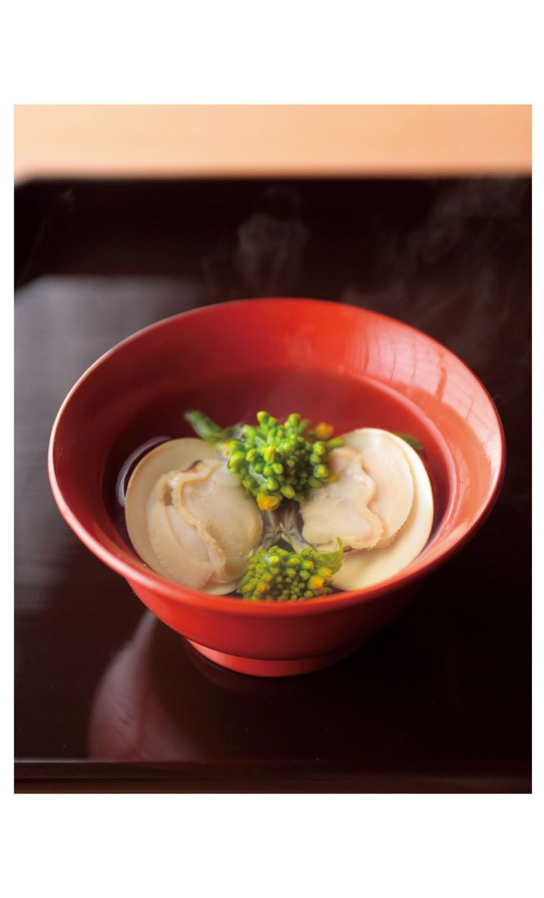
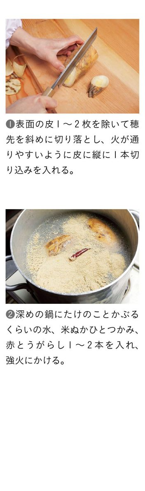
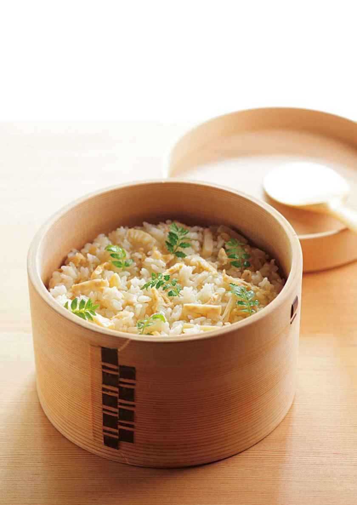
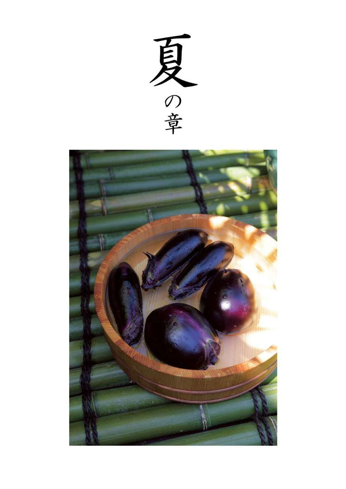
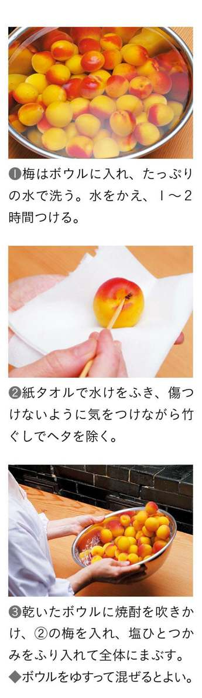
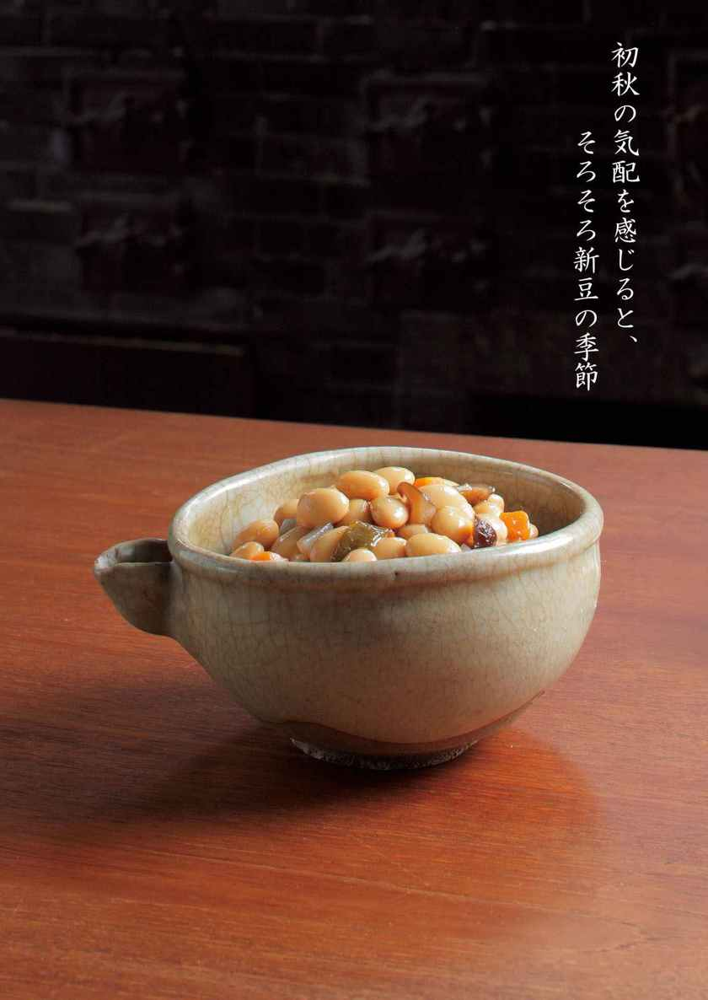
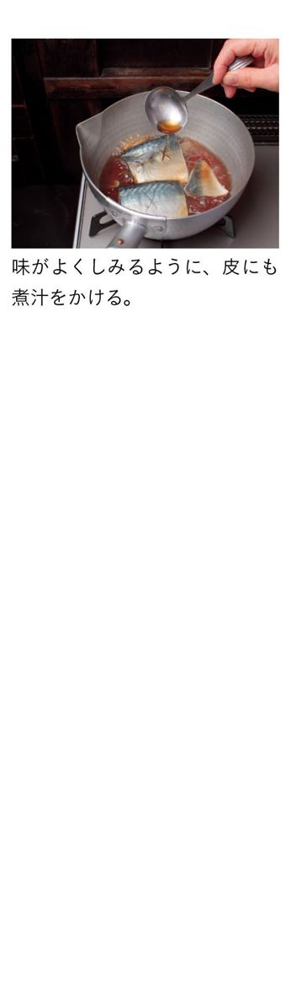
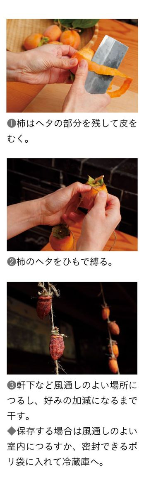
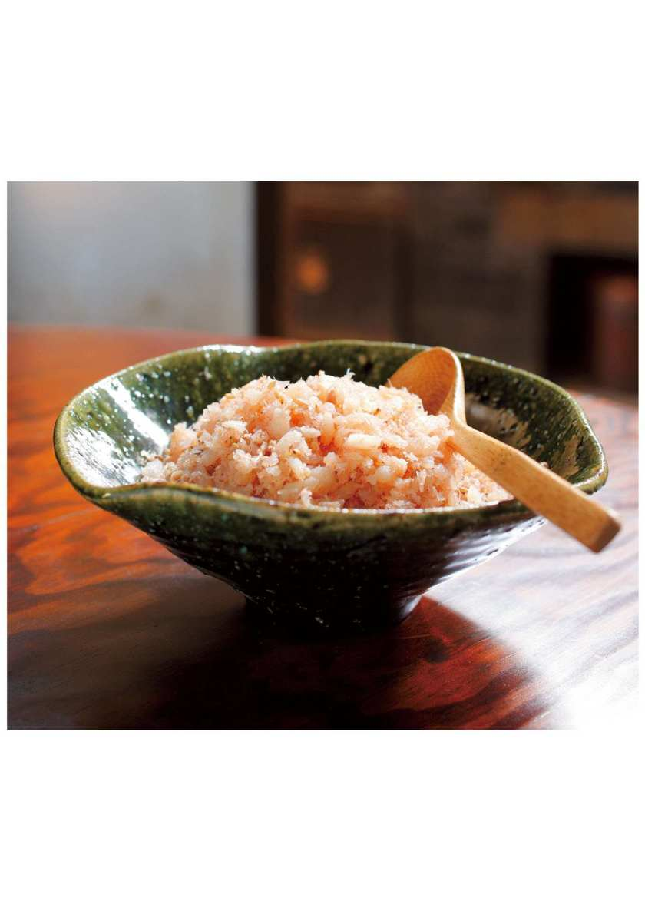
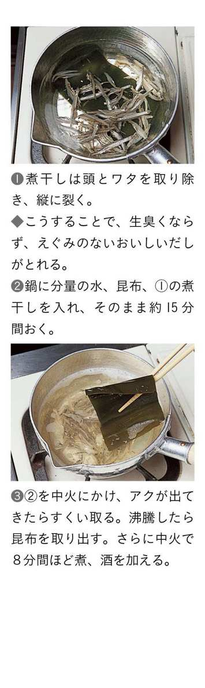

| ＮＨＫきょうの料理 京町家・杉本家の味 京のおばんざいレシピ | |
| 杉本 節子 | |
| (2011) | |
はじめに
おばんざいは、京都の商家ではぐくまれたごく日常の毎日のおかずのこと。
わたしの生家、杉本家は、もとは江戸中期の寛保３（１７４３）年に創業した呉服商で、本店を京都に構え、千葉県・佐原に店舗を持って商売をする「他国店持京商人」でした。生まれ育ったこの家は、江戸の終わりの大火で焼失した後、明治３（１８７０）年に棟上げされた京町家。明和４（１７６７）年にこの地に建てられた当時の建物が再建されていて、表通りに面して「店の間」があり、奥に住居棟をもつ「表屋造」と呼ばれる職住一体の家屋です。この建物は１９９０年には京都市の有形文化財に、２０１０年には国の重要文化財に指定され、公益財団法人「奈良屋記念杉本家保存会」によって運営、保存されています。
現在、わたしと家族は新しい別棟での暮らしですが、おくどさん（かまど）のあるこの土間に立つと、質素倹約を旨とし、商売繁盛にいそしんだかつての京商家の実に倹しい暮らしを感じることができるのです。わが家に伝わる暮らしの備忘録「歳中覚」には、年中行事の決まり事や折々の献立などが書き留められていますが、その献立からは、使用人を多く抱えていた江戸の昔は、食費を安く抑えて節約に努めることが、生活の要だったことがわかります。けれども、そうした分相応の慎ましやかな暮らしの中で、おだいどこ（台所）を切り盛りする女たちは、家族の健康を考え、家の発展を願いながら工夫を重ねてきたのではないかと思います。おばんざいは、そんな商家の日々の料理が基本になっています。
おばんざいは、ふだんの飾らないおかずですから、ぜいたくな食材は使いません。けれども、滋味に富んだ旬の味をいつくしみ、むだを出さずに食材の端っこまで使いきっておいしいものをつくるというおばんざいの知恵と工夫は、エコと節約の考えにも通じ、今の時代の生活のヒントになるのではないでしょうか。本書では受け継がれてきた「歳中覚」の精神とおばんざいを通して、そんなことをお伝えできればと思います。
ふきの炊いたん［＊］
ふきじゃこ［＊］
ふきとベーコンの煮物［＊］
えんどう豆のひすい煮［＊］
湯葉と菜の花のおひたし［＊］
ばらずし［＊］
身しじみのしぐれ煮［＊］
はまぐりと菜の花のお吸い物［＊］
だし巻き［＊］
ほろほろ卵［＊］
目玉照り焼き［＊］
たけのこと昆布の炊いたん［＊］
たけのこご飯［＊］
たけのこの木の芽あえ［＊］
姫皮のかつお煮［＊］
湯葉ちりめんざんしょう［＊］
豚しゃぶのごまさんしょうソース［＊］
たらこと糸こんにゃくのさんしょう炒り煮［＊］
コラム
あじの南蛮漬け［＊］
あじのかば焼き丼［＊］
あじのつみれ汁［＊］
万願寺とうがらしの焼き漬け［＊］
ピーマンのちりめんじゃこ炒め［＊］
ピーマンと油揚げの細切り炒め［＊］
なすの泥亀煮［＊］
なす田楽［＊］
なすの即席しば漬け［＊］
なすのからしあえ［＊］
きゅうりのくず仕立て［＊］
お揚げときゅうりのごま酢あえ［＊］
とうがんのえびそぼろあんかけ［＊］
とうがんと厚揚げの炒め物［＊］
とうがんとハムの春雨サラダ［＊］
高野豆腐の炊いたん［＊］
ごま豆腐［＊］
湯葉の炊いたん［＊］
湯葉の茶碗蒸し［＊］
湯葉の春巻［＊］
ひじきの炊いたん［＊］
ひじきの炊き込みご飯［＊］
さばずし［＊］
コラム
じゃがいもと刻み昆布のあっさり煮［＊］
じゃがいもの甘煮［＊］
じゃがいものだんご汁［＊］
小豆ご飯［＊］
大豆の五目煮［＊］
さばのしょうが煮［＊］
さばの竜田揚げ［＊］
あゆの鞍馬煮［＊］
焼き豆腐と厚揚げの夫婦炊き［＊］
ほうれんそうとしめじの白あえ［＊］
簡単ひりょうず［＊］
おからの炊いたん［＊］
おからのボリューム肉詰め［＊］
コラム
ふろふき大根［＊］
大根の五目煮［＊］
柚子大根［＊］
切り干し大根の炊いたん［＊］
はりはり漬け［＊］
切り干しとひじきのそぼろ炒め煮［＊］
青ねぎと牛肉のすき焼き風［＊］
青ねぎと油揚げのからし酢みそあえ［＊］
青ねぎとさつまいものかき揚げ［＊］
鯛かぶら［＊］
簡単かぶら蒸し［＊］
お揚げと菜っぱの炊いたん［＊］
たらの西京焼き［＊］
たらとたらこの親子でんぶ［＊］
さけと水菜のあっさり煮［＊］
さけのかす汁［＊］
福わかし餅［＊］
小豆がゆ［＊］
コラム
冬の保存食 おこうこ［＊］
おこうこのぜいたく煮［＊］
多彩な京の冬野菜［＊］
冬の保存食 ゆべし［＊］
柚子みそ［＊］
冬の行事 すす払い［＊］
杉本家のお正月［＊］
白みそ雑煮［＊］
杉本家のお重詰め［＊］
ごまめ、たたきごぼう、数の子、黒豆［＊］
酒かすは、春を迎える味［＊］
◆本書の決まり
◎本書で使用している計量カップは２００㎖、計量スプーンは大さじ15㎖、小さじ５㎖、１㎖＝１㏄です。
◎本文の材料表のＥはおよそ１人分のエネルギー、Ｔはおよその調理時間を示します。
◎材料表の●欄の調味料の分量は、つくり方本文に記載されています。
◎本文中の「紙ぶた」は鍋に入る大きさに切ったオーブン用の紙などに数か所切り目を入れたものを示しています。
◎材料表の「油揚げ」は１枚40～50ｇのものです。
◎調理器具は、各メーカーの使用説明書などをよくお読みのうえ、正しくお使いください。
◎本文中で表示した電子レンジの調理時間は６００Ｗのものです。７００Ｗの場合は約０・８倍、５００Ｗの場合は約１・２倍にしてください。
本書は『ＮＨＫきょうの料理』テキストをもとに新しい料理を加え、再編集したものです。
放送用のテキストではありません。
杉本家の「歳中覚」
ハレの日と常の日のメリハリを大切にする京商家の食事
わが家には先祖が記した古文書がぎょうさん（たくさん）残っています。読み解くことができないままお蔵の棚に積まれているものも多いのですが、年中行事やしきたり、折々のしつらいや献立などを子細に書き留めた「歳中覚」は常に家族の手元に置かれ、最も大切な暮らしの道しるべとなってきました。その最初には、数ページにわたって一年を通しての重要な決まり事が書かれ、日々の食事について「年中平生 朝夕茶漬 香物 昼一汁一菜 但し九月十日より三月二日迄 朝茶がゆ」とあります。
商家では、ご飯を炊くのはお昼に一度。堅くなった冷やご飯を少しでも柔らかくするために、朝と夕飯はお茶漬けにし、漬物と一緒に食べていました。昼食の「一汁一菜」とは、ご飯のほかに汁物が一つ、おかずが一品、ということです。おかずはもっぱら野菜料理が中心で、魚を食べるのは月三度。毎月13日には小豆と小芋と焼き豆腐のみそ汁、21日には茶めしと豆腐の汁、といったお決まり料理も定められていました。
こうして見ると、ほんまに質素な食事ですが、ハレの日と常の日を区別し、メリハリのある生活をすることで倹約に努めたわけです。おばんざいは、そうした商家の食事が原点です。ですから、時代は変わっても、ぜいたくな食材は使わず、味も「すごくおいしい」ようにはしないのです。そんなふうにいうと不思議に思わはるかもしれませんが、食材をたくさん使うようなぜいたくをせんでも、だしのうまみを生かし、素材の持ち味を引き出すようにすれば、十分満足できるおいしさを楽しむことはできるのです。つまり「あれを加えたら、もっとおいしいなるな」と思ってもそこは抑えて、「十分においしいけれど、おいしすぎひんようにする」。むだやぜいたくをしないようにする代わりにひと手間、ひと工夫を惜しまないで十分においしいものをつくる、それが京女が代々守ってきたおだいどこの知恵。「歳中覚」に書かれた決まり事は、倹約ということだけではなく、そんな心得もまた教えてくれているように思います。
ゆるりゆるりと訪れる京の春を知らせてくれるのは、菜の花。
待ちわびた桜の便りが聞こえてくる頃には、たけのこやふきもわが家に届くでしょう。
春の香りにあふれるおだいどこに立つ喜びはひとしお。
初々しい風味を損なわないように気をつけながら、鍋のお守りをするのはうれしいものです。
ふきの炊いたん
ふきはうす味に炊いて、春の香りを楽しみましょう。
シャッキリとした歯ごたえを残して煮上げるとおいしいと思います。
材料（２人分）
ふき...（大）４本（葉を除いて約２５０ｇ）
だし...カップ½
酒...小さじ１
砂糖...小さじ２
うす口しょうゆ...小さじ⅓
塩...ふたつまみ
削り節...適量
木の芽（あれば）...少々
●塩
Ｅ30㎉ Ｔ40分〈＊〉
＊ふきを冷ます時間は除く。
１ ふきは葉を切り落とし、軸は鍋に入る長さに切り、太い部分と細い部分に分けておく。
２ 鍋に約１・５ℓの湯を沸かし、塩大さじ２を入れ、１の太い部分を入れて約１分30秒間ゆでる。細い部分も加えてさらに約１分30秒間ゆで（写真❶）、冷水にとって冷ます。
３ ２が冷めたら、切り口のところから引くようにして皮をむく（写真❷）。
４ ふきは太い部分は縦半分に切り、約４㎝長さに切る。細い部分も同じ長さに切る。
◆下ごしらえは１ワ分ぐらいまとめてすると、光熱費の節約にもなる。すぐに使わないときは、水につけたまま冷蔵庫に入れれば、２～３日間もつ。
５ 鍋に４、だしを入れて中火にかけ、煮立ったらを順に加える。紙ぶたをして、アクを取りながら約15分間煮る。
６ 耐熱容器に削り節を入れ、電子レンジ（６００Ｗ）に10～20秒間かけてカラッとさせる。
７ ５に６を入れてからめ、器に盛る。あれば木の芽を添える。
ふきじゃこ
ふきは葉っぱも捨てずに使いきらんと、もったいない。
あれば、だしがらの煮干しを刻んで一緒に炊いても。
材料（つくりやすい分量）
ふきの葉...５枚（約２５０ｇ）
ちりめんじゃこ...20ｇ
だし...カップ½
酒...カップ¼
砂糖...大さじ１
みりん...大さじ２
しょうゆ...大さじ１
●塩・サラダ油
Ｅ３００㎉（全量） Ｔ10分〈＊〉
＊ふきを水にさらす時間は除く。
１ ふきの葉は塩適量を加えた湯で約１分30秒間ゆでて水にとり、時々水をかえながら１時間以上水にさらす。
◆ふきの葉をゆでるときは、「ふきの炊いたん」で軸を下ゆでしたときの湯を利用するとむだがない。水にさらす時間は、好みで加減する。
２ １をギュッと絞って水けをきる。ごく細かいみじん切りにして、さらに水けを絞る。
３ 鍋にサラダ油大さじ１を熱し、ちりめんじゃこを軽く炒め、２を加えてサッと炒める。を順に加えて混ぜ、弱火で煮る。煮汁がほとんどなくなるまでいり煮にする。
４ 煮上がったらバットに広げて冷まし、器に盛る。熱いうちに食べてもおいしい。
◆冷蔵庫で４～５日間保存できる。
ふきとベーコンの煮物
ベーコンのうまみを含ませて、コトコトと柔らかくなるまで煮るとまたおいしい。
材料（２人分）
ふき...（大）３本（葉を除いて約１８０ｇ）
ベーコン...４枚
グリンピース（さや付き）...２００ｇ（正味約90ｇ）
チキンスープ〈＊〉...カップ３
●塩・サラダ油・砂糖
Ｅ２４０㎉ Ｔ55分〈＊＊〉
＊チキンスープの素（洋風）を表示どおりに溶いたもの。
＊＊ふきを冷ます時間は除く。
１ ふきは葉を切り落とし、「ふきの炊いたん」の手順１～４と同様にして下ごしらえをする。
２ グリンピースはさやをむき、塩適量を入れた熱湯でサッとゆで、ざるに上げる。ベーコンは４～５㎝長さに切る。
３ 鍋にサラダ油小さじ２を熱し、２のベーコンの両面を軽く炒める。１のふきを加えてサッと炒め、砂糖小さじ１、チキンスープを加える。煮立ったらアクを取り、ふたをして約20分間、コトコトと煮る。
４ ３に２のグリンピースを加え、約10分間蒸し煮し、ふきが十分柔らかくなったら火から下ろす。
えんどう豆のひすい煮
ふっくらとしたお豆さんをうすら甘く炊いた一品は、ひと味違った旬の味。
わたしにとっては、懐かしい祖母の味です。
材料（つくりやすい分量）
グリンピース（さや付き）...２００ｇ（正味90ｇ）
●塩・砂糖・うす口しょうゆ
Ｅ１２０㎉（全量） Ｔ30分〈＊〉
＊グリンピースを冷ます時間は除く。
１ グリンピースはさやから出して水につける。
◆豆はさやから出すと堅くなるので、すぐに水につける。
２ すり鉢またはボウルに、水けをきった１と塩小さじ１を入れ、こすり合わせるように全体を混ぜる。表面が鮮やかな色になったら水で洗い流す。
３ 鍋にグリンピースを入れ、かぶるくらいの水を加えて中火にかける。沸騰したらアクを取り除き、砂糖大さじ１を加えて紙ぶたをし、約10分間弱火でコトコト煮る。塩ふたつまみと、うす口しょうゆ小さじ⅓を加えてさらに約10分間煮、豆が柔らかくなったらそのまま冷ます。
湯葉と菜の花のおひたし
京都のもんにとって、春を一番に運ぶ花といえば真っ先に思い浮かべるのが菜の花。
上品な甘みのある湯葉と一緒におひたしにすると、ほんまに春らしい一品になります。
材料（２人分）
平湯葉（乾）...（18㎝角）２枚
菜の花...80ｇ
だし...カップ¾
みりん...小さじ２
うす口しょうゆ...小さじ２
塩...ひとつまみ
●塩
Ｅ50㎉ Ｔ15分〈＊〉
＊冷蔵庫におく時間は除く。
１ 湯葉はヒタヒタの水につけ、約５分間おいて戻す。
２ １は２㎝幅、４～５㎝長さの短冊形に切る。
３ 鍋にを入れて火にかけ、煮立ったら２の湯葉を加えて２～３分間中火で煮る。バットに移し、十分に冷ます。
４ 菜の花は軸の堅いところを除く。塩適量を加えた熱湯でサッとゆで、冷水にとって冷まし、ざるに上げて水けをよくきる。
５ ４の菜の花は食べやすい長さに切り、３に加え（写真）、冷蔵庫で１～２時間おいて味をなじませる。
うちとこでは、雛の節句は旧暦にならって４月にお祝いします。
雛祭りは桃の節句とも呼ばれますが、ちょうど時期を同じくして桜も盛りのとき。
ばらずしやはまぐりのお吸い物などのごちそうを準備するおだいどこ（台所）も、このときこそは、と華やかな春の香りにあふれます。
代々の女性たちの雛人形を飾って祝うにぎやかな節句の日
雛祭りというと、３月にお祝いするものと思わはるかもしれませんが、もともと旧暦３月３日（新暦の４月３日ごろ）に行うのがならわしといわれています。お雛さんと一緒に左近の桜、右近の橘を飾るならわしは、まさに桜の季節の節句やったからなのでしょう。京都では今でもその習慣が残っていて、うちとこも４月近くなってから曽祖母の有職雛を中心に、代々の女性たちの雛人形を飾ります。
有職雛というのは、お公家さんの装束をまとった人形で、ほんまに雅なお顔をしてはります。明治27年に曽祖母の輿入れを祝ってあつらえられたこのお雛さんは、源氏枠と呼ばれる御所の紫宸殿を模した飾り棚に飾ります。一畳ほどの広さに高さ１ｍもある白木の棚はとても精巧にできていて、組み立てるのはたいそう手間がかかりますけれど、金箔張りのふすまをはめ、御簾を下げると、それは風雅な御殿が完成するのです。
雛の節句には、この有職雛のほか、わたしの初節句にあつらえてもらった市松人形や一刀彫の立ち雛、そして数年前からは母の里に代々伝わる享保雛や古今雛など、うちとこのお蔵で守っているいろいろな人形や道具類を、部屋ごとに趣向を凝らして飾りつけ、にぎやかにお祝いします。
おだいどこも春色に染まるハレの日のごちそう
お祭りの日は、ばらずし、はまぐりのお吸い物、赤貝とわけぎのてっぱい（ぬた）、笹がれいの焼き物、身しじみのしぐれ煮というのがお決まりの献立です。
ばらずしとは五目ずしのことで、具は生の魚を使わず、甘く炊いた高野豆腐やかんぴょうなど。雛用の小さなお重に、錦糸卵をふんわりと盛りつけたばらずしは、彩り豊かな春色のごちそう。子どもの頃は、この日のために祖母と母がつくってくれるばらずしがうれしゅうて、おだいどこをのぞきながら心躍らせたものでした。
女の子の成長を祝うこのお祝いのお膳には、貝を使った料理が欠かせませんが、なかでも身しじみのしぐれ煮は、京都ならでは。古くから琵琶湖などでとれる淡水の魚介類がよう使われてきた京都では、春においしいしじみのむき身を甘辛く炊いて、お祝いの一品として登場させるのです。
そして、お菓子もまた貝をかたどったひちぎり餅。庭に出始めたばかりの柔らかいよもぎを摘んで草餅をつくり、それをひきちぎって貝の形にし、あんこと桃色に染めた白あんをのせればでき上がり。
お雛様のごちそうは、娘の健やかな成長を願う母の味。とても大切な思い出の味やと思います。
ばらずし
具はかんぴょうや高野豆腐などの乾物を炊いたもの。
ぜいたくな食材を使わなくても、ひとつずつていねいに炊き上げてすし飯に混ぜると、お祝いにふさわしい、ふくよかな味に仕上がります。
材料（つくりやすい分量）
米...２合（３６０㎖）
昆布...（５㎝角）１枚
合わせ酢
米酢・砂糖...各大さじ３
塩...小さじ１
干ししいたけ...３枚
砂糖...大さじ２
みりん...大さじ１
しょうゆ...大さじ３
かんぴょう（乾）...10ｇ
高野豆腐〈＊〉...１枚
だし...３００㎖
砂糖...大さじ３
うす口しょうゆ...小さじ１
塩...小さじ½
卵...２コ
菜の花（つぼみの部分）...８房
グリンピース...（正味）30ｇ
紅しょうが（細切り）...適量
木の芽...適量
●酒・塩・サラダ油
Ｅ１７００㎉（全量） Ｔ50分〈＊＊〉
＊「高野豆腐の炊いたん」参照。
＊＊干ししいたけを戻す時間、ご飯を炊く時間を除く。
１ 干ししいたけは、ぬるま湯カップ１½に５～６時間つけて戻す。
２ 米は洗ってざるに上げ、余分な水けをきる。炊飯器の内釜に入れ、昆布と酒大さじ２を加え、炊飯器の２合の目盛りまで水を注いで炊く。炊き上がったら昆布を除いて盤台などに移す。合わせ酢の材料を合わせて回しかけ、まんべんなく混ぜる。ぬれぶきんをかけておく。
３ １を戻し汁ごと鍋に移して火にかけ、沸騰したらアクを除きながら約20分間煮る。の砂糖とみりんを加えて10分間煮、さらにしょうゆを加えて10分間煮る。冷めたら２枚はみじん切りにし、１枚は飾り用に薄切りにする。煮汁はとっておく。
４ かんぴょうはサッと水にくぐらせ、塩少々をまぶしてもみ、水で洗う。鍋に入れ、ヒタヒタまで水を加えて中火でゆでる。竹ぐしが通るくらいになったら水けをきり、みじん切りにする。
５ ３の煮汁と４を鍋に入れ、煮汁がほとんどなくなるまで中火で煮る。
６ 別の鍋にを入れて煮立たせ、高野豆腐を入れ、約15分間煮る。火から下ろし、冷めたら、煮汁を軽く絞ってみじん切りにする。
７ 錦糸卵をつくる。ボウルに卵を割り入れ、よく溶いて塩少々を加える。フライパンを熱してサラダ油を薄くひき、卵液を流して薄焼き卵を焼く。粗熱が取れたら細切りにする。
８ 菜の花とグリンピースは、それぞれ塩適量を加えた湯でサッとゆでて冷水にとり、水けをきる。
９ ２に、３のみじん切り、５、６を加え、しゃもじで切るように混ぜる。
10 器に９を盛り、７の錦糸卵を広げる。３の飾り用のしいたけと８を飾り、紅しょうがと木の芽を散らす。
身しじみのしぐれ煮
京都ではおなじみのしじみのむき身は、しょうがをきかせて、甘めに炊き上げます。
材料（つくりやすい分量）
身しじみ〈＊〉...１５０ｇ
水・酒...各カップ¼
みりん...小さじ１
砂糖...小さじ２
しょうゆ・うす口しょうゆ...各小さじ１
しょうが（せん切り）...１かけ分
Ｅ２１０㎉（全量） Ｔ20分
＊しじみを加熱して身を取り出したもの。京都では川魚専門店などで売られている。
１ 身しじみはサッと水で洗う。
２ 鍋にを入れて煮立たせ、１を加える。
３ 弱火で10～15分間煮、ほとんど煮汁がなくなるまで煮上げる。
はまぐりと菜の花のお吸い物
ハレの日にふさわしいお吸いもん。
春の滋味が口いっぱいに広がります。

材料（２人分）
はまぐり〈＊〉...４コ
菜の花（つぼみの部分）...４房
水...カップ２
昆布...（５㎝角）１枚
酒...大さじ１
●塩・うす口しょうゆ
Ｅ20㎉ Ｔ15分
＊砂抜きしたもの。
１ 菜の花は塩適量を加えた湯でサッとゆで、冷水にとってざるに上げ、水けをきる。
２ 鍋にを入れて中火にかけ、煮立ったら昆布を引き上げ、はまぐりを加える。貝が開いたらアクを除き、うす口しょうゆ・塩各少々を加えて味を調える。
３ 椀に２のはまぐりを入れ、菜の花を添え、汁をはる。
だし巻き
京都の「だし巻き」は、甘くせず、うす口しょうゆと塩で味つけします。
うちとこの定番レシピは卵とだしの割合が約３対２。
材料（つくりやすい分量）
卵...３コ（約１５０㎖）
だし〈＊〉...１００㎖
かたくり粉...小さじ２
うす口しょうゆ...小さじ１
塩...ひとつまみ
大根（すりおろす）...適量
●サラダ油・しょうゆ
Ｅ２９０㎉（全量） Ｔ10分
＊しっかりした味に仕上げる場合は、濃いめのだしにするとよい。
１ ボウルに卵を割りほぐし、目の細かいざるに通してこす。のだし小さじ２でかたくり粉を溶いて加え、残りのも加える。
２ 卵焼き器を温め、サラダ油適量を入れて全体にならす。１を玉じゃくし約１杯（約⅕量）流し入れて広げる。全体に火が通ったら、手早く向こう側から手前に向かって巻く。あいているところにサラダ油少々をぬり、巻いた卵を向こう側に寄せて、手前に卵液玉じゃくし１杯弱（約¼量）を流して焼き（写真）、手前に巻く。これを繰り返して全量を巻く。
３ 熱いうちに巻きすで巻いて、形を整える。しばらくおいて落ち着いたら食べやすく切り分け、皿に盛り、大根おろしとしょうゆ少々を添える。
ほろほろ卵
祖母がようつくってくれた思い出の料理。
ほんのり甘く、しょうがの隠し味がアクセント。
材料（２人分）
卵...３コ
ちくわ...１本（25ｇ）
ねぎ（白い部分／小口切り）...５㎝分
グリンピース（生）...25ｇ
しょうが（すりおろす）...小さじ½
みりん・砂糖...各小さじ１
うす口しょうゆ...小さじ１½
●塩・サラダ油
Ｅ２１０㎉ Ｔ10分
１ ちくわは薄い小口切りにする。グリンピースは塩適量を入れた熱湯でゆで、ざるに上げる。
２ ボウルに卵を割りほぐし、しょうが、を加えてよく混ぜ合わせる。
３ フライパンにサラダ油大さじ１を熱し、ねぎ、ちくわを炒める。ちくわがふっくらとしたら、２を流し入れる。
４ 卵がふくらんだら大きくかき混ぜ、半熟になったらグリンピースを加え、全体を混ぜて火から下ろす。
目玉照り焼き
ウスターソースのスパイシーな風味が、思いがけないおいしさです。
材料（２人分）
卵...２コ
もやし...80ｇ
にんじん（せん切り）...10ｇ
ウスターソース・みりん...各小さじ１
うす口しょうゆ...小さじ½
パセリ...適宜
●サラダ油・塩・こしょう・酒
Ｅ１３０㎉ Ｔ10分
１ もやしは、あればひげ根を取る。
２ フライパンにサラダ油小さじ２を熱し、卵を割り入れる。塩・こしょう各少々をふり、目玉焼きの要領で焼く。白身が固まって焼き色がついてきたら黄身をつぶさないようにしながら半分に折り、両面にこんがりと焼き目をつける。
３ 卵を脇に寄せ、あいたところに１とにんじんを入れる。塩・こしょう各少々をふって炒め、酒小さじ２を回し入れてふたをし、１分～１分30秒間蒸し焼きにする。
４ を合わせて卵に回しかけ、両面にからめて照り焼きにする。火から下ろして皿に盛り、パセリを添える。
新緑のまばゆい季節。
心晴れやかに節句を迎えます。
座敷床には「大将さん」と呼ばれる凛々しい姿の応神天皇を中心に、節句の人形を飾ります。
節句の日のお楽しみは、おまんや（お菓子屋）さんのちまきと柏餅
京都のならわしというのはおもしろいもので、お雛さんは旧暦でお祝いするのに、端午の節句のお祝いは新暦の５月５日に行います。
弥生というても、京都は比叡山から吹き下ろす風に震える日も多く、お蔵を行き来しながらお雛さんを出すなんて、考えただけでもしんどくてたまらんもの。そこで「お雛さんかて風邪ひいてしまわはるさかい」などと言い訳をして、少し暖かくなるのを待つのです。けれども、端午の節句を旧暦で行うとなれば、ちょうど梅雨の頃。そんなときにお飾りを出したら、湿気で人形が傷んでしまいます。そやから、新暦でお祝いしましょ、となるわけです。
わが家に代々伝わる端午の節句の人形は、中央に応神天皇、脇に野見宿禰、旗持ち人形を置き、白馬、薬玉、陣太鼓を飾るのがお決まり。江戸・元治元年の大火を逃れた旗持ち人形以外の人形は、明治７年にこの座敷床に合わせてあつらえられ、白馬は父の初節句の際にそろえられたものです。九代目となる父は、杉本家にとっては七代目以来の男子誕生。初節句はさぞにぎやかやったことと思います。
「歳中覚」をひもといてみると、端午の節句の献立には「朝飯 ふきの汁、平皿 竹の子、こん婦」と書かれています。特別なごちそうはありませんが、おそらく、それは祖母がようつくっていた「たけのこと昆布の炊いたん」のような旬の山の幸と海産物を取り合わせたこの時期ならではの料理やったんやないかと思います。
お祝い料理はないものの、今もこの日に欠かせないのは、ちまきと柏餅。笹の葉を巻いた端正なちまきは、お菓子屋さんによって、くずを練り上げて巻いたものやういろうを巻いたものなど、さまざま。柏餅もまた、おなじみのこしあんとみそあん以外に、白みそにこしあんを混ぜたもの、刻んだ木の芽を混ぜたものなどがあり、わが家の女たちは、毎年、どこのおまんやさんのが一番おいしい、などとあれこれ言いながらいただくのを楽しみにしています。
たけのこと昆布の炊いたん
「若竹煮」と違うて、わかめの代わりに昆布とたけのこを一緒に炊き上げます。
たけのこにだしのうまみがようしゅんで（しみて）、トロリと煮えた昆布もまたおいしい。

材料（２人分）
たけのこ（根元の部分／ゆでたもの〈＊〉）...３００ｇ
昆布〈＊＊〉...（６～７㎝長さ）６枚
だし〈＊＊＊〉...カップ２
削り節...大さじ２～３
みりん...大さじ１½
うす口しょうゆ...小さじ２
塩...小さじ⅓
木の芽・削り節（仕上げ用）...各適量
Ｅ80㎉ Ｔ１時間50分
＊「たけのこの下ゆで」を参照。
＊＊日高昆布または早煮昆布を使うとよい。厚みは薄めのものでよい。
＊＊＊「昆布とかつおのだし」。
１ 底が広い鍋に水カップ２と昆布を入れて20分間ほどおく。
２ たけのこは１・５㎝厚さの輪切りにし、片面に包丁で十文字（大きいものは格子）に切り込みを入れる。
３ １の昆布がふやけたらだしを加え、２のたけのこを並べて強火にかける。ひと煮立ちさせたらアクを取り、だし用パックに入れた削り節、を加える。紙ぶたをし、昆布が柔らかくなるまでコトコトと煮る。昆布は表面がところどころ波打ったようにふくらめば、柔らかく煮上がった目安。
４ ３のたけのこと昆布を器に盛り、仕上げ用の木の芽と削り節を添える。
たけのこの下ゆで
たけのこは掘ってから時間がたつとえぐみが増すので、買ってきたらすぐに下ゆでします。穂先、胴、根元で歯ごたえが違うので、料理によって使い分けるといいでしょう。保存するときは、ボウルや保存容器に下ゆでしたたけのこを入れ、たっぷりの水をはって冷蔵庫へ。毎日、水をかえれば約１週間日もちします。

たけのこご飯
たけのこご飯には、歯ごたえのいい胴の部分を使いましょか。
具はたけのことお揚げだけで、十分おいしい。

材料（つくりやすい分量）
たけのこ（胴の部分／ゆでたもの〈＊〉）...１００ｇ
油揚げ...１枚
米...２合（３６０㎖）
だし〈＊＊〉...３５０㎖
酒...大さじ１
うす口しょうゆ...大さじ１½
昆布...（３㎝角）１枚
木の芽...適量
●塩
Ｅ１２７０㎉（全量） Ｔ10分〈＊＊＊〉
＊「たけのこの下ゆで」を参照。
＊＊「昆布とかつおのだし」。
＊＊＊ご飯を炊く時間、蒸らす時間は除く。
１ たけのこは５㎜幅くらいの細切りにする。油揚げは紙タオルにはさんで余分な油を取り除き、せん切りにする。
２ 米は洗ってざるに上げ、余分な水分をきる。
３ 炊飯器の内釜に２の米を入れ、だしと、塩小さじ½を加えて混ぜる。昆布を入れ、１のたけのこと油揚げを加えて炊く。
４ 炊き上がったら約15分間蒸らし、昆布を取り出して底からサックリと混ぜる。器などに盛り、木の芽を添える。
たけのこの木の芽あえ
たけのこの歯ごたえ、ふくよかな木の芽の香りを満喫します。
材料（２人分）
たけのこ（穂先から胴の部分／ゆでたもの〈＊〉）...１００ｇ
だし〈＊＊〉...カップ¼
うす口しょうゆ...小さじ１
砂糖...小さじ１
塩...ひとつまみ
木の芽みそ
木の芽...15枚（約２ｇ）
西京みそ...大さじ２
みりん・砂糖...各小さじ１
うす口しょうゆ...小さじ½
うど...30ｇ
いか（胴の部分／皮をむく）...30ｇ
木の芽...少々
●酢・酒
Ｅ１００㎉ Ｔ20分
＊「たけのこの下ゆで」を参照。
＊＊「昆布とかつおのだし」。
１ たけのこは短冊形に切る。鍋にの材料とたけのこを入れ、中火にかけて煮含める。
２ うどは皮をむき、たけのこと同じ大きさに切って酢少々を加えた水にさらす。
３ いかは、たけのこと同じくらいの大きさに切る。鍋に入れ、酒大さじ１½をふり、中火でいり煮する。
４ 木の芽みそをつくる。木の芽は粗く刻み、すり鉢に入れてよくする。残りの材料を加え、さらにすり合わせる。
５ たけのこ、水けをきったうど、いかを４の木の芽みそに加え、全体をよくあえる。
６ ５を器に盛り、木の芽を添える。
姫皮のかつお煮
たけのこの穂先を包む柔らかい姫皮もほかさずに（捨てずに）サッと煮ていただきます。
材料（つくりやすい分量）
１ たけのこの姫皮は短冊形に切る。
２ 鍋に１とを入れ、煮汁がほとんどなくなるまで中火で煮る。
３ ２に削り節をくずしながらまぶし、器に盛る。
少し手間をかけて季節の香りを楽しむのも、おばんざいのだいご味ですやろか
春も終わり頃になると、ふっくらとふくらんださんしょうの実をつんで、塩ゆでにしたり、塩漬けやつくだ煮などの保存食にしておきます。
未熟な青いさんしょうの実は、ピリッとした辛みと爽やかな香気が特徴。一年で今しか手に入らない素材なので、少し手間をかけて季節の香りを楽しむのも、おばんざいのだいご味ですやろか。下ごしらえした実ざんしょうは、ちりめんざんしょうにするほか、魚と一緒に煮たり、肉料理に加えたり。塩ゆでして冷凍すれば、独特の風味や青みはそのままに一年中、いろいろな料理に使って楽しむことができます。冷凍保存のほか、塩漬けやつくだ煮にしておけば、肉や魚、野菜に添えたり、味つけに使っても、おいしくいただけます。
下ごしらえ
実ざんしょうの塩漬け（写真右）
下ごしらえした実ざんしょう85ｇ（軸付きなら１００ｇ）の水分を十分に除いて、塩10ｇをまぶす。
実ざんしょうのつくだ煮（写真左）
下ごしらえした実ざんしょう１７０ｇ（軸付きなら２００ｇ）、酒80㎖、みりん20㎖、しょうゆカップ½を鍋に入れ、煮汁がほとんどなくなるまで、焦がさないように弱火で煮る。
◆どちらも清潔な保存容器に入れる。暗くて涼しい場所で約１年間保存可能。
湯葉ちりめんざんしょう
実ざんしょうとちりめんじゃこをサッと炊いたちりめんざんしょうは、おなじみの常備菜。
湯葉を加えると、ひと味違うやさしい味になり、ご飯がようすすみます。
材料（つくりやすい分量）
ちりめんじゃこ...70ｇ
平湯葉（乾）...２～３枚（15ｇ）
実ざんしょう（下ごしらえしたもの）〈＊〉...小さじ２
酒...大さじ２
みりん...大さじ２
うす口しょうゆ...小さじ１
Ｅ２９０㎉（全量） Ｔ15分
＊「実ざんしょうの塩漬けと実ざんしょうのつくだ煮」の「下ごしらえ」を参照。
１ 湯葉は水に５～６分間浸して戻し、軽く水けをきる。３㎝長さに切り、さらに５㎜幅に切る。
２ 鍋に実ざんしょう、を入れて中火にかけ、軽く煮立てる。
３ ちりめんじゃこを加えて混ぜ、さらに１の湯葉を加えて全体をよく混ぜる。弱めの中火にして、煮汁がなくなるまでいり煮にする。
豚しゃぶのごまさんしょうソース
ごまさんしょうソースは、鶏の蒸し物や豆腐にもよう合う万能だれ。
つくっておけば冷蔵庫で１～２日間保存できるので便利やないかと思います。
材料（２人分）
豚薄切り肉...10枚（１８０ｇ）
しょうがの皮・ねぎ（青い部分）...各適量
ごまさんしょうソース
実ざんしょう（下ごしらえしたもの）〈＊〉...小さじ２
白ごま...大さじ２
チキンスープ〈＊＊〉...大さじ１
米酢...大さじ１
しょうゆ...大さじ２
砂糖...大さじ１
ごま油...大さじ１
しょうが（みじん切り）...１かけ分
ねぎ（白い部分／みじん切り）...６㎝分
レタス・トマト...各適量
●酒・塩
Ｅ３７０㎉ Ｔ20分
＊「実ざんしょうの塩漬けと実ざんしょうのつくだ煮」の「下ごしらえ」を参照。
＊＊チキンスープの素（中国風）を表示どおりに溶いたもの。
１ 鍋に１ℓの湯を沸かし、酒大さじ１、塩小さじ１、しょうがの皮、ねぎを入れる。豚肉を１枚ずつサッと湯にくぐらせ、色が変わったら冷水にとり、ざるに上げて水けをきる。
２ ごまさんしょうソースをつくる。実ざんしょうは半量をみじん切りにする。すり鉢に白ごまを入れて粒がなくなるまでよくすり、残りの実ざんしょうを加えてよくすりつぶす。チキンスープ、米酢、しょうゆ、砂糖、ごま油を加えてさらにすり混ぜる。みじん切りにした実ざんしょう、しょうが、ねぎを加えてよく混ぜる。
３ 皿に１の豚肉と、食べやすく切ったレタスとトマトを盛り、２のソースを添える。
たらこと糸こんにゃくのさんしょう炒り煮
母がようつくってくれた、気取らんおばんざい。
ご飯のおともにはもちろん、お酒のおつまみやお弁当のおかずにもおすすめです。
材料（つくりやすい分量）
たらこ...１腹
糸こんにゃく...１袋（２００ｇ）
実ざんしょう（下ごしらえしたもの）〈＊〉...小さじ１
酒・みりん...各大さじ１
砂糖・うす口しょうゆ...各小さじ１
●塩・サラダ油
Ｅ２４０㎉（全量） Ｔ10分
＊「実ざんしょうの塩漬けと実ざんしょうのつくだ煮」の「下ごしらえ」を参照。
１ たらこは皮に切り目を入れ、包丁の背でしごくようにして皮を取り除く。
２ 糸こんにゃくは４～５㎝長さに切る。塩適量を入れた熱湯でサッとゆで、ざるに上げて水けをきる。
３ 鍋にサラダ油大さじ１を熱し、２の糸こんにゃくを入れて炒め、余分な水分をとばす。
４ 実ざんしょう、１のたらこ、を加え、たらこが固まらないようにほぐしながら混ぜ、汁けがほとんどなくなるまでいり煮にする。

おばんざいは始末の料理。残りもんにもひと手間かけて、おいしい一品に
始末を考えるのは、おだいどこの楽しみ
おばんざいは、「始末の料理」だとよういわれます。安い季節の食材でお金をかけず、食材をむだにせずに端っこまで使いきったり、一度にぎょうさん（たくさん）つくって、いろいろな料理に使い回し、最後まで食べきる工夫を凝らした料理は、始末の考えに通じているからやと思います。
なかでも、最もそれらしいおばんざいというたら「おこうこのぜいたく煮」（▼）。古漬けのおこうこ（たくあん）をけだし（水につけて塩抜き）して炊いたもので、ただの漬物にこれだけの手間をかけるから「ぜいたく」というわけです。うちとこでは、同様に、夏になるとすっぱすっぱ（とてもすっぱく）なったどぼ漬け（ぬか漬け）をけだしして、細かく刻み、しょうがのみじん切りと合わせてさっぱりとした一皿につくり変えます。
そうした始末の料理は、昔から家庭のおだいどこで母から娘へと伝えられてきたもの。けれど、今の暮らしのなかでも、始末の考えはもっと生かせるんやないかと思うてます。例えば、煮魚をつくったらその煮汁は何かに使えへんかなぁ、とちょっと頭をひねってみる。そうすると、いいアイデアが浮かんできたりするものです。のちほどご紹介する「さばのしょうが煮」（▼）も、残った煮汁で焼き豆腐を煮てみてください。魚のうまみが豆腐にしみて、へぇ、おいしいもんやなぁ、と見直していただけるんやないかしら。なんでもすぐにほかさずに、そんな始末を考えながらおだいどこに立つのは、楽しいものです。
けど、始末は食材に限ったことではありません。野菜の下ゆでは、一度にまとめてすれば光熱費と時間の節約になりますし、ゆがいた湯も使い回せば、むだがなくなります。一見けちくさいように思わはるかもしれませんが、よく考えてみれば、それは地球環境にもいいこと。始末のいい暮らしをしてみると、なんや、少しずつ本当の豊かさが見えてくるような気がするのです。

＊「おからの炊いたん」のレシピ参照（▼）。

祇園祭に沸き上がる京都の夏。
蒸し暑い気候をしのぐために昔からつくられてきたのは、みずみずしい野菜や青背の魚のおばんざい。
酢の物やさっぱりとした煮物などの涼味とともに、スタミナのつくようなコクのある味わいも織り交ぜるのが、京の夏の味覚です。
あじの南蛮漬け
ピリッととうがらしをきかせた南蛮漬けは、暑い日にもぴったりのおばんざい。
暑さで疲れた体を、やさしい酸味がシャキッとさせてくれます。
材料（２人分）
あじ（三枚におろしたもの）〈＊〉...２枚（約２００ｇ）
うど...30ｇ
たまねぎ...80ｇ
にんじん...20ｇ
赤とうがらし...１本
米酢...大さじ４
砂糖...大さじ４
水...大さじ１
塩...小さじ１弱
うす口しょうゆ...小さじ½
●塩・サラダ油・こしょう・小麦粉
Ｅ３８０㎉ Ｔ20分〈＊＊〉
＊ゼイゴとウロコを取り除いたもの。
＊＊味をなじませる時間は除く。
１ あじは小骨を抜き（写真❶）、３㎝幅のそぎ切りにする。両面に軽く塩をふり、約10分間おく。
２ うどは皮をむいて５㎜幅、３㎝長さの薄い短冊形に切り、水にさらす。
◆うどはピーラーで薄く切ってもよい。
３ の赤とうがらしは種を除いて輪切りにし、残りのの材料と合わせて合わせ酢をつくる。
４ たまねぎは薄切りにし、にんじんは４㎝長さのせん切りにする。フライパンにサラダ油小さじ２を熱してたまねぎとにんじんをしんなりするまで炒め、熱いうちに３につける。
５ １のあじの水けを紙タオルでふき取り（写真❷）、両面にこしょう少々をふり、小麦粉を薄くまぶす。深めのフライパンにサラダ油を１・５㎝深さくらいまで入れて約１７０℃に温め、あじをカラリと揚げ焼きにする。熱いうちに４に加え（写真❸）、20分以上おく。
◆冷蔵庫で２～３日間保存できる。
６ ５を器に盛り、水けをきった２のうどを散らす。
あじのかば焼き丼
梅干しの風味をきかせたかば焼きをしょうがご飯にのせて丼に。
コクのある味わいの夏のスタミナ丼です。
材料（２人分）
あじ（三枚におろしたもの）〈＊〉...２枚（約２００ｇ）
水...大さじ３
酒...大さじ２
みりん...大さじ１½
しょうゆ...大さじ１
砂糖...小さじ２
梅干し...１コ（種を除いて粗くほぐす）
ご飯（温かいもの）...２６０ｇ
しょうが...10ｇ
貝割れ菜...¼パック
刻みのり・白ごま...各適量
●塩・小麦粉・サラダ油
Ｅ４８０㎉ Ｔ25分〈＊＊〉
＊ゼイゴとウロコを取り除いたもの。
＊＊あじに塩をふっておく時間、つけ汁につける時間は除く。
１ あじは小骨を取り除き、皮側に１㎝間隔で浅く切り込みを入れてから横半分に切る。両面に軽く塩をふり、約10分間おく。
２ バットなどにを入れ、１の水けをふいてつける。途中で裏返し、約10分間つける。
３ ２の汁けをふき、小麦粉を薄くまぶす。フライパンにサラダ油大さじ２～３を熱し、両面をこんがりと焼く。
４ フライパンの余分な油をふき、２のつけ汁を加える。軽く煮立ったら、煮汁をスプーンであじにかけながら照りを出す。
５ しょうがはせん切りにし、サッと水にくぐらせる。水けをきり、ご飯に混ぜて丼に盛る。
６ 貝割れ菜は根元を切り落として食べやすい長さに切り、５に散らす。４をのせ、余った煮汁をかけ、刻みのり、白ごまを散らす。
あじのつみれ汁
自家製のつみれは、格別のおいしさ。
仕上げにみょうがとねぎをパッと散らせば、さっぱりとあと味のいい一品に。

材料（２人分）
つみれ
あじ（三枚におろしたもの）〈＊〉...２枚（約２００ｇ）
塩...小さじ¼
みそ...小さじ１
卵...１コ
細ねぎ（小口切り）...２本分
しょうが（すりおろす）...10ｇ
かたくり粉...小さじ２
昆布...（10㎝角）１枚
酒...大さじ１
うす口しょうゆ・塩...各小さじ¼
みょうが（斜め薄切り）...１コ分
ねぎ（白い部分／斜め薄切り）...５㎝分
●塩
Ｅ１８０㎉ Ｔ30分〈＊＊〉
＊ゼイゴとウロコを取り除いたもの。
＊＊あじに塩をふっておく時間は除く。
１ 鍋に水カップ３と昆布を入れ、約20分間おく。
２ つみれをつくる。あじは小骨ごと３㎝幅くらいに切る。両面に塩少々をふり、約10分間おく。
３ ２の水けをふき、塩、みそとともにフードプロセッサーに入れ、粗いペースト状になったら残りのつみれの材料を加え、なめらかになるまでさらにかくはんする。
◆フードプロセッサーがない場合は、あじを粗く刻み、細かくたたいてすり鉢でする。
４ １を中火にかけ、沸騰寸前で昆布を取り出す。を加え、フツフツと沸いてきたら３をスプーンですくって加える。アクを取り、中まで火を通す。
５ 椀に盛り、みょうがとねぎを彩りよく散らす。
２００年以上続くわが家の梅干し漬け
春から初夏へと季節は移ろい、庭の梅の木が青い実をたくさんつけると、梅雨入りも間近。この時期のわが家のおだいどこ仕事といえば梅干しの漬け込み。「歳中覚」にも旧暦５月に「梅干を見合わせて漬ける事」とありますから、２００年以上続いてきたならわしです。
祖母が残してくれた手書きのレシピをもとに、毎年、母と漬け込む梅干しは、夏には消耗した体力の回復に大いに役立ち、冬には温かいご飯やおかゆに欠かせない、うちとこの大切な保存食です。
梅の塩漬け
材料（つくりやすい分量）
完熟梅...２㎏
粗塩...３２０ｇ
焼酎（アルコール度数35％）...適量
使用する道具
●霧吹き...焼酎を入れて梅や容器などを殺菌する
●漬物容器...酸や塩、気温の変化に強い陶製のつぼがおすすめ
●おもし...梅の重量の約２倍の重さ。梅酢が上がったらおもしを半分に減らすので、１㎏のものを２つ用意する。
●中ぶた...容器の直径より一回り小さい磁器の平皿
◆漬物容器とおもし、中ぶたはきれいに洗って熱湯を回しかけ、しっかり乾かす。


赤じそ漬け
塩漬けした梅干しは、土用干しまでそのまま漬けて仕上げると白梅干しになりますが、赤じそと一緒に漬け込むのが、わが家の恒例。
赤じそはほっておくとすぐに黒ずんでしまうので、手に入れたらなるべく早く漬け込みます。塩もみをしてアクを出しきった赤じそに、梅酢を加えると鮮やかな赤紫色になる美しいさまを見るのは楽しいものです。
さっぱりとした白梅干しもおいしいけれど、赤じそを一緒に漬け込んだ梅干しは、色、香りとも別格です。漬け込んだ赤じそは、おにぎりに巻くほか、乾燥させて細かく刻み、自家製のふりかけにすると重宝です。
材料（つくりやすい分量）
梅（梅酢が上がったもの）...２㎏分
赤じそ...３～４ワ（葉だけで２５０ｇ程度）
粗塩...50ｇ

土用干し
梅雨が明けたら、晴天が３日以上続く日に天日に干して仕上げます。
塩漬けした梅は、赤じそと一緒に漬け込んで、７月の土用の日前後に天日に干して仕上げます。天日干しから数か月おくと塩と酸味がなじむのですが、土用干しを終えたばかりのものは、時間を経たものとはひと味違っていて、まだ梅の爽やかなすっぱさと香気が感じられ、この時でないと味わえないおいしさ。夏の昼下がり、土用干しした梅を口に含めば、夏の疲れが癒されるようです。

熟れ梅煮
黄色く熟した梅を砂糖で煮た煮梅は、甘ずっぱく、とろけるような口当たり。
傷つけないようにていねいに扱って、弱火でゆっくりと煮上げます。
材料（つくりやすい分量）
完熟梅...１㎏
グラニュー糖...８００ｇ～１㎏
Ｅ３３３０㎉（全量） Ｔ55分〈＊〉
＊梅を水につけておく時間、冷ます時間は除く。
１ 梅はボウルに入れ、たっぷりの水で洗う。水をかえ、１～２時間つける。
２ 紙タオルで水けをふき、傷つけないように気をつけながら竹ぐしでヘタを除く。
３ ホウロウの鍋に２とかぶるくらいの水を入れて火にかけ、沸騰したらごく弱火にして約10分間煮ていったん湯を捨てる（写真❶）。
４ 鍋に３とグラニュー糖を入れ、紙ぶたをしてごく弱火でゆっくりと煮る（写真❷）。煮汁が沸き立ってから20～30分間煮て、煮汁にとろみがついたら火から下ろし、そのまま冷ます。
万願寺とうがらしの焼き漬け
夏の京都には欠かせないおばんざい。
青とうは焼くと、より甘みが際立ちます。
材料（２人分）
万願寺とうがらし...（小）10本
削り節...適量
●うす口しょうゆ・酒
Ｅ25㎉ Ｔ10分
１ 万願寺とうがらしは、竹ぐしを刺して数か所穴をあける。
２ バットなどにうす口しょうゆ大さじ１と酒小さじ１を合わせておく。
３ 焼き網または魚焼きグリルに１を並べ、全体にこんがりと焼き色がつくまで焼く。
４ ３を熱いうちに２につけ込む。器に盛り、削り節を添える。
ピーマンのちりめんじゃこ炒め
ピーマンが少しクタッとなるまで炒め煮にするのがコツですね。
材料（２人分）
ピーマン...６コ
ちりめんじゃこ...20ｇ
酒...大さじ１
みりん...大さじ１½
うす口しょうゆ...小さじ１
塩...少々
水...大さじ２
●サラダ油
Ｅ１２０㎉ Ｔ10分
１ ピーマンはヘタと種を取り、縦に４等分に切る。
２ フライパンにサラダ油大さじ１を熱し、１のピーマンの皮側を下にして入れ、中火で炒める。薄皮がはじけたら、ちりめんじゃこを加え、全体を軽く炒める。
３ を加えて弱火にし、ふたをする。途中で２～３度上下を返すようにかき混ぜ、全体がしんなりするまで約６分間蒸す。途中で水分がなくなったら少量の水を加えるとよい。
ピーマンと油揚げの細切り炒め
ピーマンとささ身だけではなく、お揚げを一緒に炒めると、うまみもボリュームも増して、よりおかずらしくなります。
材料（２人分）
ピーマン...６コ
油揚げ...１枚
鶏ささ身...（小）１本（60ｇ）
しょうが（せん切り）...１かけ分
顆粒チキンスープの素（中国風）...小さじ１
水...大さじ１
みりん...大さじ１
うす口しょうゆ...小さじ１
かたくり粉...小さじ１
米酢...小さじ１
白ごま...適量
●塩・こしょう・酒・サラダ油
Ｅ２１０㎉ Ｔ10分
１ ピーマンはヘタと種を取り、縦に細切りにする。
２ 油揚げは紙タオルにはさんで余分な油を取り除き、ピーマンと同じ長さの細切りにする。
３ 鶏ささ身は筋を取り、そぎ切りにしてから細切りにする。軽く塩、こしょうをふり、酒小さじ１½をかけてほぐす。
４ フライパンにサラダ油大さじ１を熱し、しょうがを軽く炒める。３を加え、全体が白っぽくなったら油揚げとピーマンを加えて強火で炒める。
５ を混ぜ合わせて加え、全体を炒め合わせたら火から下ろす。
６ 器に盛り、白ごまをふる。
なすの泥亀煮
なすにすりごまとみそを合わせた泥亀汁と呼ぶ精進料理をアレンジした煮物。
暑さで疲れたときにスタミナをつけてくれるコクのある一品です。
材料（２人分）
なす...３コ
八丁みそ...大さじ１½〈＊〉
白ごま...大さじ３
だし...カップ１½
砂糖...大さじ１
みりん・うす口しょうゆ...各小さじ２
●ごま油・サラダ油
Ｅ４４０㎉ Ｔ40分
＊分量は塩けによって加減するとよい。
１ なすはヘタを切り落とし、縦半分に切って皮に格子状の切り目を入れる。裏返して反対側にも４～５本、格子状になるように切り目を入れ、水に放してアクを抜く。
２ すり鉢に白ごまを入れ、半ずりになるくらいまでする。
３ 鍋にごま油・サラダ油各大さじ２½を熱し、１のなすの水けをふいて入れ、よく炒める。
４ ３にだし、、２のすりごまを加える。煮立ったら中火にし、紙ぶたをして、コトコトと10～15分間煮る。
５ 八丁みそを煮汁適量で溶きのばしてから鍋に加え（写真）、さらに10～15分間煮る。なすが柔らかくなり、煮汁が程よく煮詰まったら火から下ろして器に盛る。好みで冷やしてもおいしい。
なす田楽
アツアツのなすに田楽みそをたっぷりとつけたこの料理は、 夏の日のごちそう。
田楽みそは甘さを控えめにし、少し堅めに仕上げると夏向きの味に。
材料（２人分）
なす〈＊〉...１コ
田楽みそ〈＊＊〉
西京みそ...80ｇ
水...大さじ１½
みりん...小さじ２
砂糖...小さじ１½
柚子の皮（すりおろす）...少々
●サラダ油
Ｅ１７０㎉ Ｔ25分
＊丸なす、または長なす。
＊＊つくりやすい分量。
１ 田楽みそは、田楽みそのつくり方と同様に、鍋にすべての材料を入れて練り上げる。
２ なすはヘタを切り落とし、横半分（長なすの場合は縦半分）に切り、切り口にまんべんなく竹ぐしを刺す（写真）。
３ 深めのフライパンにサラダ油を約２㎝深さまで入れて１６０℃に温め、２のなすの切り口を下にして揚げ焼きにする。薄く色づいたらひっくり返し、竹ぐしがスッと通るまで火を通す。
４ なすが熱いうちに１の田楽みそを塗って柚子の皮をふり、器に盛る。
なすの即席しば漬け
家庭で手軽に楽しめるように、発酵させずに漬け汁に漬け込みます。
材料（２人分）
なす（四つ割りにして乱切り）...２コ分
水...カップ３
塩...小さじ½
焼きミョウバン〈＊〉...小さじ½
きゅうり...１本
みょうが（薄切り）...１コ分
しょうが（せん切り）...１かけ分
青じそ...４枚
米酢〈＊＊〉...大さじ１½
砂糖...大さじ１
塩...小さじ１
●塩
Ｅ50㎉ Ｔ10分〈＊＊＊〉
＊食材の色止めやアク抜き、形をくずさないために使われる。好みで加えなくてもよい。
＊＊あれば梅酢を使うとよい。
＊＊＊手順１、２の野菜をおく時間、３の冷蔵庫におく時間は除く。
１ ボウルにを合わせ、なすを約５分間つける。軽く水けをきって塩小さじ１½をふり、途中、１～２度混ぜながら約20分間おき、洗って汁けを絞る。
２ きゅうりは縦半分に切り、スプーンで種を除いて１㎝幅の斜め切りにする。みょうが、しょうがを合わせ、塩小さじ１をふり、約20分間おいて、洗って汁けをギュッと絞る。
３ 密封できるポリ袋に１、２を入れ、を加える。空気を抜いて閉め、全体をよくもみ、冷蔵庫に一晩おく（または軽くおもしをして室温に１～２時間おいてもよい）。
４ 食べるときに、青じそをちぎり、塩少々で軽くもんで水で洗い、水けを絞って混ぜる。
なすのからしあえ
からしをツンときかせた夏向きのあえ物です。
なすの歯ごたえもポイント。
材料（２人分）
なす...２コ
塩...小さじ１
焼きミョウバン...小さじ１
溶きがらし〈＊〉
粉がらし...小さじ１
ぬるま湯...小さじ１
細ねぎ（小口切り）...適宜
●うす口しょうゆ
Ｅ25㎉ Ｔ10分〈＊＊〉
＊市販のマスタードや練りがらしでもよい。
＊＊なすをおく時間は除く。
１ なすはヘタを切り落とし、縦半分に切って８㎜～１㎝厚さの半月形に切る。ボウルになすとを合わせて入れ、軽くもむ。10～15分間おいて水けが出てきたら、洗って水けをギュッと絞る。
２ 溶きがらしをつくる。おちょこなどに粉がらしとぬるま湯を入れて練り、そのまま器を逆さにしておく。
３ ２の辛みがたったら、うす口しょうゆ大さじ１を混ぜ、１のなすに加えて全体をよくあえる。
４ 器に盛り、小口切りにした細ねぎを散らす。
きゅうりのくず仕立て
祖母がよく黄色く熟したきゅうりを使ってつくってくれた懐かしい一品です。

材料（２人分）
きゅうり...½本
だし...カップ２
塩...小さじ½
くず粉...大さじ１½
しょうが（すりおろす）...適量
●うす口しょうゆ
Ｅ30㎉ Ｔ10分
１ きゅうりは縦半分に切り、５㎜幅の斜め切りにする。
２ 鍋にと１を入れて火にかける。沸騰したら約５分間、きゅうりが柔らかくなるまで煮、うす口しょうゆ小さじ１を加える。くず粉を水大さじ２で溶いて加え、とろみをつける。
３ 椀に盛り、おろししょうがを添える。
お揚げときゅうりのごま酢あえ
あえ衣の味が薄まらんように、きゅうりの下ごしらえをするのがおいしさの決め手です。
材料（２人分）
油揚げ...１枚
きゅうり（薄切り）...２本分
干ししいたけ（スライス）...10ｇ
砂糖...大さじ１
しょうゆ...小さじ２
白ごま...大さじ３
米酢...大さじ１½
うす口しょうゆ・砂糖...各小さじ２
塩...ひとつまみ
●塩
Ｅ２４０㎉ Ｔ25分〈＊〉
＊干ししいたけを戻す時間、きゅうりを浸す時間は除く。
１ 干ししいたけは、水かぬるま湯カップ１½に30分～１時間つけて戻す。
２ 油揚げは紙タオルにはさんで余分な油を取り除き、幅１㎝、長さ３㎝に切る。フライパンで、両面がパリッとするまで焼く。
３ ボウルに水カップ１½、塩小さじ１½を入れて溶かし、きゅうりを浸して約20分間おき、しんなりさせる。ざるに上げて洗い、水分を十分に絞る。
４ １の干ししいたけを戻し汁ごと鍋に入れ、サッと煮てアクを取り除く。を加え、弱火で10～15分間煮る。
５ すり鉢にの白ごまを入れて粒がなくなるくらいにすり、の残りを加える。２～４を加えてよくあえる。
とうがんのえびそぼろあんかけ
「暑いときこそ、熱いものを食べんとあかんのえ」
祖母がよくそう言うてました。
とうがんの煮物は冷やし鉢にすることも多いのですが、できたてをいただくのもおいしいものです。
材料（２人分）
とうがん...３５０ｇ
えび（無頭／殻付き）...約１２０ｇ
枝豆（塩ゆでしてさやから出す）...約30粒
みりん...大さじ２
うす口しょうゆ...大さじ１½
酒...大さじ１
しょうが（すりおろす）...小さじ½
塩...小さじ¼
だし...カップ２～２¼
しょうが汁...小さじ１
●塩・かたくり粉
Ｅ１４０㎉ Ｔ40分
１ とうがんは種とワタを取り、一口大に切る。皮を薄くむき（写真❶）、皮側に浅く細かい格子状の切り目を入れる（写真❷）。
２ 塩適量を入れた熱湯で１を７～８分間ゆで、竹ぐしがスッと通るくらいの堅さになったら（写真❸）、冷水にとり、冷めたらざるに上げて水けをきる。
３ えびの殻をむいて背ワタを除き、包丁でたたくようにして５㎜角に刻む。
４ 鍋に３のえびとを入れ、よく混ぜてから、いり煮にする。
５ えびがほぐれて赤くなったらだしを加えてアクを除き、２のとうがんを加える。紙ぶたをして柔らかくなるまで約15分間、中火で煮る。
６ ５にしょうが汁を加え、かたくり粉大さじ１½を同量の水で溶いて加える。とろみがついたら枝豆を加え、器に盛る。
とうがんと厚揚げの炒め物
厚揚げとさきいかがうまみの素。
少し濃いめに味つけすると、暑い日にも食がすすみます。
材料（２人分）
とうがん...３００ｇ
厚揚げ...１２０ｇ
さきいか...15ｇ
ねぎ...20㎝
しょうが（薄切り）...５ｇ
酒・みりん...各大さじ１
水...大さじ３
うす口しょうゆ...小さじ２
しょうゆ...小さじ１
七味とうがらし...適量
●サラダ油
Ｅ２１０㎉ Ｔ20分
１ とうがんは種とワタを取り、皮をむいて、約７㎜厚さ、３～４㎝四方に切る。
２ 厚揚げは紙タオルにはさんで余分な油を取り除き、とうがんと同じ大きさに切る。
３ さきいかは約４㎝長さに切る。ねぎは５㎝長さに切ってから、縦半分に切る。
４ フライパンにサラダ油大さじ１を熱し、しょうが、ねぎ、さきいかを入れて軽く炒め、１を加える。全体に油が回ったら、２とを加え、ふたをして約８分間、蒸し煮にする。途中で２～３回、ふたを開けて全体を混ぜる。
５ 器に盛り、七味とうがらしをふる。
とうがんとハムの春雨サラダ
とうがんは細切りにして水にさらすと、青臭さが抜けて、生でもおいしくいただけます。
材料（２人分）
とうがん...２００ｇ
ロースハム（薄切り）...２枚（25ｇ）
春雨（乾）...20ｇ
パプリカ（黄）...¼コ（20ｇ）
ミニトマト（輪切り）...３コ分
合わせ酢
酢・砂糖・うす口しょうゆ...各大さじ２
水...大さじ１
ごま油...小さじ１
顆粒スープの素（中国風）...小さじ⅙
溶きがらし〈＊〉...小さじ⅙
白ごま...適量
Ｅ１５０㎉ Ｔ15分
＊粉がらしとぬるま湯を１対２の割合で溶いたもの。市販のマスタードや練りがらしでもよい。
１ とうがんは種とワタを取り、皮をむいて３～４㎝長さの細切りにする。約５分間水にさらし、ざるに上げてしっかり水けをきる。
２ 春雨は熱湯につけ、２～３分間おいて戻し、冷水にとる。水けをきり、７～８㎝長さに切る。
３ ハムは３～４㎝長さの細切りにする。パプリカはヘタと種を除いて薄切りにし、約５分間水にさらし、水けをきる。
４ 合わせ酢の材料を混ぜ合わせる。
５ １から３をボウルに入れて混ぜ、ミニトマトと４の合わせ酢を加えてあえる。
６ 器に盛り、白ごまをふる。
油照りといわれる、蒸し暑い京都の夏は、みずみずしい野菜が暑さ疲れを癒します
おなすに青とう、きゅうりにとうがん。
夏の食卓には涼やかな野菜料理が並びます
夏になると八百屋さんの店先には、京都のあちこちでとれた露地物の野菜がぎょうさん顔を並べますが、なかでもなすは「おなす」、青とうがらしは「青とう」と呼んで親しまれ、ほんまに毎日のように食卓にのぼります。
京都のおなすは種類が豊富で、形も味もさまざま。なかでも上賀茂あたりで栽培される大きくて丸い賀茂なすは、代表的な京野菜のひとつ。きめが細かく、焼いても煮てもくずれにくいのが特徴で、なす田楽にしたら一番やと思います。
青とうもまた、栽培された土地によって種類が異なり、果肉の厚みや甘み、香りが違います。先っぽが獅子の口のような形をしていることからししとうと呼ばれる青とうは、香りがよく、焼き漬けにするとほんまにおいしい。ししとうを見るたびに、子どもの頃、母がよう「今晩はししとうでも焼いとこか」と言うてたのを思い出します。そして「万願寺」と呼ばれるおなじみの万願寺とうがらしは、青とうのなかでも大ぶりで肉厚。ピーマンと同じように洋風に調理してもおいしくいただけます。
それから夏野菜といえば、昔から暑さしのぎによいと言われ、「歳中覚」の夏の献立にも登場するのが、うり。浅漬けや汁物のほか、毎年、８月５日に執り行われる創業記念日の祝膳にも「浅うりとはもの皮の酢の物」が決まりものとして並びます。最近は白うり（浅うり）の料理は見かける機会が少なくなりましたが、今はそれに代わってきゅうりやとうがんなど、同じウリ科の野菜が夏のおばんざいを彩ります。
暑さで消耗した体力を回復するためには、ひと手間かけて夏野菜を温かい料理に仕立てるというのも、昔ながらの京のおばんざいの知恵。「暑いときこそ、熱いものを食べんとあかんのえ」というのが口ぐせだった祖母は、きゅうりもだしで煮て、くずでとろみをつけて温かい汁物にしてくれました。
浅うりと焼きはもの酢の物
材料（２人分）
白うり...１本
焼きはも...¼匹分
だし・米酢...各大さじ２
うす口しょうゆ...小さじ２
砂糖...小さじ１
塩...ふたつまみ
●塩
Ｅ70㎉ Ｔ15分
❶白うりは皮と種を除いて細切りにする。水カップ１に塩小さじ１を溶かし、白うりをつけてしんなりしたら水けを絞る。
❷焼きはもは細く刻む。
❸ボウルにを合わせ、①と②を加えてあえる。
高野豆腐の炊いたん
しょうゆを控えめにして、すっきりとした甘さに仕上げるのがうちとこの味。
冷めても温かくしてもおいしくいただけます。
材料（２人分）
高野豆腐...４枚
昆布...（はがき大）１枚
砂糖...大さじ３
みりん...大さじ３
塩...小さじ½
うす口しょうゆ...小さじ１
さやいんげん...６本
●塩
Ｅ５７０㎉（全量） Ｔ40分〈＊〉
＊冷ます時間は除く。
１ 鍋に水カップ２¼と昆布を入れ、約20分間おく。
２ さやいんげんはあれば筋を取って塩ゆでし、食べやすい長さに切る。
３ 高野豆腐は、水またはぬるま湯を入れたバットに浮かべて戻す。中心まで水を含んだら手のひらではさんでしっかり水けを絞り、４等分に切る。
◆重曹で膨軟加工した高野豆腐は、柔らかく戻ったらすぐに水けを絞る。
４ １を中火にかけ、沸騰寸前で昆布を取り出す。を加え、３の高野豆腐を並べ、沸騰したら約15分間、弱火で煮る。煮上がる直前に２のさやいんげんを加え、火から下ろしてそのまま冷ます。
５ ４の高野豆腐が味を含んだら、さやいんげんとともに器に盛る。
◆温かくして食べる場合は、冷まして味を含ませてから、温め直すとよい。
ごま豆腐
ぷるんと柔らかい口当たりは、つくりたてならではのおいしさです。
くずの粉けがなくなるまでていねいに練ると、なめらかに仕上がります。
材料（つくりやすい分量）
練りごま（白）...大さじ３
くず粉...50ｇ
だし...大さじ２
うす口しょうゆ...小さじ２
しょうゆ・みりん...各小さじ１
おろしわさび...少々
●塩
Ｅ４７０㎉（全量） Ｔ30分〈＊〉
＊冷蔵庫で冷やす時間は除く。
１ 鍋に練りごまを入れ、くず粉を水カップ３½で溶いたものを少しずつ加えながらよく混ぜる。
２ 塩小さじ½を加えて中火にかけ、鍋底を木べらで絶えず混ぜながら、半量になるまで練り上げる。
３ 水でぬらした容器に２を流し、冷めたら冷蔵庫で約１時間冷やす。
◆冷蔵庫で冷やしすぎると堅くなるので気をつける。
４ 鍋にを合わせて煮立て、冷ましておく。
５ ３を切り分けて器に盛り、４を入れ、おろしわさびを添える。
湯葉の炊いたん
シコッとした歯ごたえを残してうすら甘く炊くと、湯葉本来のおいしさが楽しめます。
材料（２人分）
平湯葉（乾）...（18㎝角）６枚
だし...カップ½
みりん...小さじ２
砂糖...小さじ１
うす口しょうゆ...小さじ１½
塩...ひとつまみ
Ｅ１００㎉ Ｔ10分
１ 湯葉はヒタヒタの水につけ、約５分間おいて戻す。
２ １は３㎝幅、９㎝長さの短冊形に切る。
３ 鍋にを入れて火にかけ、煮立ったら２の湯葉を加えて３～４分間煮て味を含ませる。
湯葉の茶碗蒸し
「湯葉の炊いたん」を少し取り分けて茶碗蒸しに。
トロリとなめらかなのどごしです。
材料（２人分）
１ ボウルに卵を溶きほぐし、ざるでこす。を合わせて加え、泡立てないように混ぜ合わせる。
２ 耐熱の器に「湯葉の炊いたん」を分けて入れ、それぞれに１を均等に静かに注ぐ。
３ 蒸気の上がった蒸し器に入れ、弱火で約10分間蒸す。
湯葉の春巻
湯葉は炊くだけではなく、揚げると大豆の素朴なうまみを感じます。
春巻にすると、目先の変わったボリュームおかずになりますね。
材料（２人分）
平湯葉（乾）...（18㎝角）４枚
鶏ひき肉...30ｇ
しょうが（すりおろす）...５ｇ
にんじん...10ｇ
生しいたけ...（小）１枚
もやし...30ｇ
顆粒スープの素（中国風）...小さじ½
水...カップ½
砂糖...小さじ２
うす口しょうゆ...小さじ１
塩...ひとつまみ
しょうゆ...大さじ１
水...大さじ１
米酢...小さじ２
砂糖...小さじ１
●ごま油・塩・こしょう・かたくり粉・小麦粉・揚げ油
Ｅ２６０㎉ Ｔ20分〈＊〉
＊あんを冷蔵庫で冷やす時間は除く。
１ 湯葉はヒタヒタの水につけ、約５分間おいて戻す。
２ １をバットなどに移し、乾燥しないようにラップをかけておく。
３ にんじんは細切りにし、生しいたけは石づきを除いて細切りにする。もやしはひげ根を除く。
４ フライパンにごま油小さじ２を熱し、しょうが、鶏ひき肉を炒め、塩・こしょう各少々で下味をつける。３を加えて炒め、さらにを加え、沸騰したらアクを取り除く。かたくり粉大さじ１½を同量の水で溶いて加え、とろみをつける。バットに移し、粗熱が取れたら冷蔵庫で約１時間冷やす。
５ ２の水けをふき、４の¼量を広げて置き、手前から巻く。小麦粉小さじ１を同量の水で溶いたものを湯葉の端に塗り、しっかりとめる。残りの３本も同様にする。
６ 深めのフライパンに揚げ油を１・５㎝深さまで入れて１７０℃に熱し、５を揚げ焼きにする。
７ 器に６を盛りつけ、を合わせて添える。
ひじきの炊いたん
甘辛く炊かずに、あっさりした味に仕上げるのがうちとこの味です。

材料（つくりやすい分量）
ひじき（乾）...20ｇ
油揚げ...１枚
だし〈＊〉...カップ¾
酒・しょうゆ...各小さじ１
砂糖・みりん...各小さじ２
うす口しょうゆ...大さじ１
●サラダ油
Ｅ３４０㎉（全量） Ｔ30分〈＊＊〉
＊「昆布と煮干しのだし」を使うとよい。
＊＊ひじきを戻す時間は除く。
１ ひじきはたっぷりの水につけ、15～30分間おいて戻し、上のほうからつまむようにしてざるにとる。ざるに入れたまま２～３度水をかえて軽くすすぎ、水けをよくきる。
２ 油揚げは紙タオルではさんで押すようにし、余分な油を吸い取る。長さ３～４㎝、幅５㎜に切る。
３ 鍋にサラダ油大さじ１を熱し、１を入れてサッと炒める。全体に油が回ったら、だし、、２の油揚げを加えて煮る。弱火で時々かき混ぜながら10～15分間煮、煮汁が底のほうに少しだけある状態になったら、火から下ろす。
ひじきの炊き込みご飯
「ひじきの炊いたん」が残ったら、炊き込みご飯にすれば、手軽においしい始末の一品に。
材料（つくりやすい分量）
米...２合（３６０㎖）
ひじきの炊いたん（▼）...カップ½
大豆〈＊〉...大さじ１強（約15ｇ）
新ごぼう
（直径約１・５㎝）...10㎝
うす口しょうゆ...大さじ１
みりん...小さじ２
ごま油...小さじ１
みつば...適宜
●酢
Ｅ１３３０㎉（全量） Ｔ35分〈＊＊〉
＊あれば市販のいり大豆でよい。その場合は手順１は省く。
＊＊ご飯を炊く時間、蒸らす時間は除く。
１ 大豆はフライパンに入れて弱火で約20分間、両面をこんがりといる。
２ ごぼうはささがきにし、酢少々を入れた水につけて約５分間さらす。ざるに上げて水けをきる。
３ 米は洗ってざるに上げ、余分な水けをきる。
４ 炊飯器の内釜に３と「ひじきの炊いたん」、１、２を入れ、２合の目盛りまで水を加え、さらにを加えて炊く。
５ 炊き上がったら約15分間蒸らし、底からサックリと混ぜて、茶碗に盛る。あれば、みつばを１㎝長さに切って水にさらし、水けをきって散らす。
７月１日から１か月かけて行われる祇園祭は、千年以上続く八坂神社の祭礼。
京都のもんにとって、祇園祭は年に一番のハレの時。
お正月やお盆よりも楽しみな行事です。
お囃子に心浮き立つ夏の夜に、家族でいただくのは手づくりのさばずし
７月１日に祭礼の始まりを表す「吉符入り」の行事が行われると、町中は祭り一色。あちらこちらから聞こえてくる「コンコンチキチ、コンチキチ」というお囃子の音に、心浮き立ち、わたしなどは気もそぞろになるのです。
うちとこの下京区矢田町は山鉾の一つ（ご神体の人形を飾った山車）「伯牙山」を出す町で、杉本家は江戸中期以来、氏子として山をお守りしてきた一軒。今から約60年前に矢田町が町会所を手放したのを機に、杉本家の「店の間」が「伯牙山」のお飾り所となりました。祭りがつつがなく執り行われるように奉仕する氏子にとっては、一年は祇園祭に始まり、祇園祭に終わるといっても大げさではないのです。
山鉾巡行が行われるのは17日。その３日前になると、店の間には伯牙山のご神体や山鉾を飾る懸装品が飾られ、山鉾町（山鉾を出す町）の家々では秘蔵の屏風を披露する屏風祭も始まります。屏風祭は江戸時代中期に始まった風習で、杉本家でも各部屋に屏風を飾り、宵山（巡行の前夜）まで一般の方々に公開しています。
祇園祭は「はも祭り」の名でも知られていますが、客人には仕出し屋さんから取り寄せたはもずしや、梅肉酢で食べるはもの落としなどのはも料理をふるまうのが京商家のならわし。
祖母は祇園祭のたびに「はもずしばかりが有名になってしもうたけど、お祭りのごちそう言うたら、さばずしが決まりもんやったんえ」と言うてました。けれども、今でも親しい間柄や家族では、手づくりのさばずしとおこわ（お赤飯）が祭りの大ごっつぉ（ごちそう）。おだいどこの納戸には、盤台のそばに竹の皮がいつも備えられていて、これを出してくる時、いよいよ祭りがきたのやなあ、という思いを深くするのです。
さばずし
さばずしは、さばのしめ方やすし酢の加減で、それぞれの家らしい味になるもの。
「さばは身をしめすぎて真っ白にせんように。すし飯は少し甘めに」という母の教えを思い出しながら、毎年、心を込めてつくります。
材料（つくりやすい分量）
さば〈＊〉...（約30㎝／三枚におろしたもの）片身１枚
米...１合（１８０㎖）
昆布...（３㎝角）１枚
合わせ酢
米酢...大さじ２
砂糖...大さじ１強
塩...小さじ１強
昆布...（１㎝×３㎝）１枚
しょうがの甘酢漬け（薄切り）...適宜
竹の皮...１枚
●塩・酒・米酢
Ｅ８９０㎉（全量） Ｔ１時間〈＊＊〉
＊生食用として売られているもの。またはマイナス20℃以下で48時間以上冷凍したものを解凍する。
＊＊合わせ酢をおく時間、さばを冷蔵庫におく時間、ご飯を炊く時間、味をなじませる時間は除く。
１ ボウルに合わせ酢の材料を混ぜ合わせ、１日おく。
２ さばはバットなどに入れ、両面にまんべんなくしっかり塩をふって冷蔵庫で６～７時間おく。
３ 米は洗ってざるに上げ、余分な水けをきる。炊飯器の内釜に昆布と酒大さじ１を入れ、炊飯器の１合の目盛りまで水を注いで炊く。
４ ２のさばの腹骨をすき取り、小骨を骨抜きで抜く（写真❶）。米酢適量で塩を洗い流す。
５ バットを洗ってさばを入れ、米酢80㎖を注いで浸す（写真❷）。10分間おいたら裏返し、さらに10分間おく。
６ ５のさばの肩口に指を入れ、薄皮を引いて取り除く（写真❸）。
７ さばの身の中央の厚い部分をそぐ（写真❹）。
８ ご飯が炊き上がったら昆布を除き、１の合わせ酢を昆布を除いて回しかけ、まんべんなく混ぜる。ぬれぶきんをかけ、粗熱が取れるまでしばらくおく。
９ まな板の上に巻きすを置き、その上に堅く絞ったふきんを広げて７のさばを皮側を下にして置く。そいだ身を尾のほうに並べて長方形に整える。
10 ８のすし飯は、手でまとめ、堅く絞ったぬれぶきんの上に置いて棒状にまとめる。
11 10のすし飯を９のさばの上に置き（写真❺）、ふきんごと巻きすで巻いて形を整える。
12 竹の皮は米酢少々でふく。
13 竹の皮に11をのせて包み（写真❻・❼）、半日から一晩、涼しい場所に置いて味をなじませる。
14 食べやすい大きさに切り分けて器に盛り、しょうがの甘酢漬けを添える。
いつでも安く手に入る食材でつくる料理を、ときしらずのおばんざいと言うてます
乾物料理は代表的なときしらずのおばんざい
昔の人は「おばんざいというのはお金をかけずに、安い食材でつくるもんや」と、口をすっぱくして言わはりました。けれども、それはたんに食費を抑えるということではなく、季節ごとに店先にぎょうさん並ぶ、安い出盛りの食材を上手に使えば、滋味に富んだ季節の味が存分に楽しめるということでもあるのです。例えば、春の主役、たけのこにしても旬のはしりのときはとても手が出ないような高値がついていますけれど、盛りになれば、値段が手ごろになるだけでなく、一段と風味が増しておいしくなります。
日々の献立を豊かにするのは、そうした旬の食材を生かしたおばんざいのおかげやと思います。けれども、季節に関係なく、いつでも手に入るひじきや高野豆腐、乾燥豆などの乾物を使った料理もまた、家庭の食卓にはかけがえのない存在。うちとこでは、それらを「ときしらずのおばんざい」と言うてます。今は「ひじきの炊いたん」も「高野豆腐の炊いたん」も、近くのスーパーに行けばすぐに手に入る時代になりましたけど、そういう昔ながらの料理というのは、それぞれの家庭の「うちとこの味」にまさるものはないんやないかと思うてます。そやから、わたしがつくった料理を父が「おばあさんの味のようやなぁ」と言うのを聞くと、ほんまにうれしい。走り庭に立つ祖母や母のそばで習った「うちとこの味」は、わたしにとっては大切にしたいお手本の味なのですから。
乾物というたら、うちとこでは、毎年６月、押し入れや棚にしまってある乾物の始末をするのがならいです。梅雨を越す前に、湿気で風味が落ちないように使い残しの乾物を一気に使いきります。
乾物は少量残ったときも使いきりやすいのがいいところ。ひじきなどは切り干し大根と一緒に炒めてもおいしいおばんざいになりますし、すでに湿気を帯びてしまった湯葉やかんぴょうは、素揚げにすれば手軽な一品になります。乾物は長く保存がきくものですが、おいしく食べきるために、一年に一度、上手に始末をするのも大事なことやと思います。
裏庭にぽろりぽろりとむかごが落ちる頃、ようやく涼風も吹き、秋らしゅうなってきます。
山や里から実りの便りが届くこの時期は、魚も脂がのっておいしいとき。
旬の滋味に富んだおばんざいが食卓に並ぶ、口福の季節です。
じゃがいもと刻み昆布のあっさり煮
刻み昆布のうまみを生かした、だしいらずの手軽な一品。
昆布のだしがようしゅんで（しみて）、ほっとするようなおいしさです。
材料（２人分）
じゃがいも（男爵）...２コ（約２５０ｇ）
刻み昆布（乾）...５ｇ
砂糖...大さじ１
みりん...大さじ１
うす口しょうゆ...小さじ１½
塩...ふたつまみ
Ｅ１２０㎉ Ｔ35分〈＊〉
＊冷ます時間は除く。
１ じゃがいもは皮をむき、４～６等分に切る。
２ 鍋に水カップ２弱と刻み昆布を入れ、約５分間おく。
３ ２にじゃがいもを加えて強めの中火にかけ、煮立ったらアクを取り除く。紙ぶたをし、約10分間中火で煮る。竹ぐしがスッと通るくらいになったら、の砂糖とみりんを加えて約10分間煮る。
４ さらにの残りを加え、約５分間煮て火を止める。そのまま冷まし、味がしみたら器に盛る。
じゃがいもの甘煮
父は幼い頃、じゃがいものことを「もーちゃん」と呼び、祖母に「もーちゃんの炊いたんをつくって」とようせがんだのだとか。
ほんのり甘く、口に含むと、とろけるような味わいです。
材料（２人分）
じゃがいも（男爵）...１コ（約１２０ｇ）
●砂糖・塩・うす口しょうゆ
Ｅ80㎉ Ｔ30分
１ じゃがいもは皮をむき、２～３㎝角に切る。
２ 鍋に１と水カップ１½を入れて火にかけ、沸騰したらアクを取り除く。じゃがいもに竹ぐしがスッと通るくらいになったら砂糖大さじ１½を加え、木べらなどで角をつぶすようにかき混ぜながら約10分間煮る。
３ 塩ひとつまみ、うす口しょうゆ小さじ１½を加え、約５分間煮る。
じゃがいものだんご汁
じゃがいもの自然な甘みがおいしい、初秋の汁物。
だしをとらず、豚肉と野菜から出るうまみを利用します。
材料（２人分）
じゃがいも（男爵）...１コ（約１３０ｇ）
かたくり粉...大さじ３
水...小さじ２
塩...ひとつまみ強
豚肩ロース肉（薄切り）...50ｇ
にんじん...20ｇ
こんにゃく...⅓枚（約50ｇ）
ごぼう...４㎝（約20ｇ）
酒...大さじ１
水...カップ２½
うす口しょうゆ・みりん...各小さじ２
塩...ひとつまみ
細ねぎ（小口切り）...２本分
●塩・酢・サラダ油
Ｅ２００㎉ Ｔ30分
１ じゃがいものだんごをつくる。じゃがいもは皮付きのままラップで包み、電子レンジ（６００Ｗ）に５分間かける。熱いうちに皮をむいてつぶし、を加えて手でこねる。まとまったら８等分にして丸め、軽く握る（写真）。
２ 豚肉は１㎝幅に切る。
３ にんじんは１㎝幅、４㎝長さの短冊形に切る。こんにゃくも同様に切り、塩適量を入れた熱湯でサッとゆで、水けをきる。ごぼうは斜め薄切りにし、酢水にさらして水けをきる。
４ 鍋にサラダ油小さじ１を熱し、２を炒め、ほぐれたら、３を加えて炒める。軽く塩をふり、全体に油が回ったら、の酒と水を加える。
５ ひと煮立ちさせてアクを取り、３～４分間中火で煮たら、の残りを加えて混ぜ、１を加える。
６ ４～５分間煮て、だんごに火が通ったら椀に盛り、細ねぎを散らす。
小豆ご飯
京都では「あずご飯」や「あずのご飯」などと呼ばれる「小豆ご飯」。
もち米ではなく、普通のお米を使って炊くのであっさりとした口当たりです。
材料（つくりやすい分量）
小豆（乾）...カップ¼（約50ｇ）
米...２合（３６０㎖）
●塩
Ｅ１２４０㎉（全量） Ｔ１時間40分〈＊〉
＊ご飯を炊く時間、蒸らす時間は除く。
１ 小豆はサッと水で洗って鍋に入れ、かぶるくらいの水を加えて中火にかける。
◆豆が古い場合は、一晩水につけるか約３時間熱湯につけてからゆでる。渋みが気になる場合は、いったん沸騰させてからゆで汁を捨て、再度ゆで直すとよい。
２ 沸騰したらアクを取り除き、ごく弱火でゆで汁が常にたっぷりになるように差し水をしながら１時間～１時間30分ゆでる。少し堅めにゆで（写真）、豆とゆで汁を分けて粗熱を取る。
３ 米は洗ってざるに上げ、余分な水けをきる。
４ 炊飯器の内釜に３の米と小豆のゆで汁を入れ、炊飯器の２合の目盛りまで水を加える。塩小さじ１½と２の小豆を加えて炊く。
５ 炊き上がったら、約15分間蒸らし、底からサックリと混ぜる。
大豆の五目煮
豆炊きが得意な母に習った五目豆は、あまり濃い味つけにせず、すっきりとした味に。
野菜のうまみを含んだお豆は、コクがあっておいしいものです。

材料（つくりやすい分量）
大豆（乾）...カップ１（約１６０ｇ）
干ししいたけ...２枚
早煮昆布...（３㎝×６㎝）１枚
にんじん...30ｇ
ごぼう...30ｇ
こんにゃく...40ｇ
●酢・塩・砂糖・うす口しょうゆ
Ｅ８６０㎉（全量） Ｔ２時間25分〈＊〉
＊豆を水につける時間、干ししいたけを戻す時間、冷ます時間は除く。
１ 大豆は水でサッと洗い、水カップ６～７につけ、一晩おく（写真❶）。
２ 干ししいたけは、ぬるま湯カップ１に５～６時間つけて戻す。
３ 大豆が十分に戻ったら、戻し汁ごと鍋に移して中火にかける。沸騰したらアクを取り除き（写真❷）、弱めの中火でゆで汁が豆の３～４㎝上まではるように差し水をしながら（写真❸）、１時間～１時間30分ゆでる（写真❹）。そのままゆで汁ごと冷ます。
◆大豆はゆで汁ごと密封容器に入れ、冷蔵庫で１～２日間保存できる。
４ ２は石づきを除き、軸とかさを薄切りにする。戻し汁はとっておく。
５ にんじんは皮をむいて１㎝角に切る。ごぼうは洗って縦半分に切ってから５㎜幅に切り、酢少々を入れた熱湯でサッとゆでて水けをきる。こんにゃくは１㎝角に切り、塩適量を入れた熱湯でゆでる。
６ 昆布はサッと水にくぐらせ、料理ばさみで１㎝角に切る。
７ 鍋に３の大豆、４のしいたけと戻し汁、５の野菜、６を入れ、大豆のゆで汁が豆に３～４㎝かぶるようにする。ゆで汁が足りなければ水を足す。中火にかけ、沸騰したらアクを取り除いて弱火にする。
８ 砂糖大さじ４を加え、アクを取り除いて約20分間、弱火で煮る。
９ さらにうす口しょうゆ大さじ１を加え、ていねいにアクを取りながら10～15分間煮て、煮汁から豆が少し顔を出すくらいになったら、火を止めてそのまま冷まし、味を含ませる。
さばのしょうが煮
さばからうまみが出るので、だしいらず。
煮物が余ったら、翌日、焼き豆腐などを加えて煮ると、煮汁もむだにならず、おいしく食べきれます。
材料（２人分）
さば（二枚か三枚におろしたもの）〈＊〉...１枚
しょうが...約30ｇ
酒...カップ¼
水...カップ¾
みりん...大さじ１
砂糖...大さじ２
うす口しょうゆ...大さじ２
酢...小さじ１
Ｅ２５０㎉ Ｔ15分
＊煮魚なので、中骨付きの二枚おろしをそのまま使ってもよい。
１ しょうがは皮をむき、⅓量を薄切り、残りをせん切りにする。
２ さばは３つから４つに切り、味がしみ込みやすいように、斜め十文字に切り目を入れる。
３ 鍋にと薄切りのしょうがを入れて火にかける。煮立ったら皮を上にしてさばを入れ、上面にも煮汁を回しかける（写真）。紙ぶたをして４～５分間、煮汁が沸いてさばの皮が煮汁につかるように火加減を調節しながら煮る。
◆しょうがの皮の部分は煮汁に一緒に入れてもよい。
４ 火から下ろして皿に盛り、しょうがのせん切りを添える。

さばの竜田揚げ
つけ汁につけてから揚げると身が赤く仕上がることから、紅葉の名所、竜田川の名がついた定番のおかず。
油少なめで揚げると手軽です。
材料（２人分）
さば（三枚におろしたもの）...１枚
酒・みりん・しょうゆ...各小さじ２
うす口しょうゆ...小さじ１
しょうが汁...小さじ１
レモン...適量
●塩・かたくり粉・揚げ油
Ｅ３００㎉ Ｔ15分〈＊〉
＊塩をふっておく時間、つけ汁につけておく時間は除く。
１ さばは１・５㎝幅に切り、塩少々をふって冷蔵庫に約15分間おく。水分が出てきたら、紙タオルできれいにふき取り、生臭さを抜く。
２ ボウルなどにを合わせ、１のさばを入れて冷蔵庫で約15分間つける。
３ ポリ袋にかたくり粉大さじ２～３を入れる。２のさばを取り出して余分な汁けをふき、ポリ袋に入れてかたくり粉をまんべんなくまぶしつける。手でギュッと握るようにして、かたくり粉をしっかりとつける。
４ 深めのフライパンに揚げ油を１・５㎝深さまで注ぎ、約１８０℃に熱する。３のさばを入れ、カラリと色よく揚げて余分な油をきる。
５ 皿に盛り、レモンを添える。
あゆの鞍馬煮
琵琶湖の恵み、落ちあゆ（産卵で川を下るあゆ）を実ざんしょうと炊くのがこの季節のお決まりです。
材料（つくりやすい分量）
あゆ（体長15㎝程度）...６匹
番茶（いれたもの）...カップ３
実ざんしょうのつくだ煮〈＊〉...小さじ１
酒...大さじ１
●米酢・みりん・砂糖・しょうゆ
Ｅ６６０㎉（全量） Ｔ１時間30分
＊市販品または「実ざんしょうのつくだ煮」を利用するとよい。
１ あゆは魚焼きグリルかオーブンでこんがりと焼き、冷ましておく。
２ 底の広い鍋に１を重ならないように並べ、番茶と米酢小さじ１を加えて中火にかける。沸騰したらアクを取り除き、を加え、紙ぶたをして、弱火でコトコトと約30分間煮る。
３ みりん・砂糖各大さじ２を加え、約30分間煮る。さらに、しょうゆ大さじ３を加えて15分間ほど煮、火から下ろしてそのまま冷ます。
焼き豆腐と厚揚げの夫婦炊き
焼き豆腐と厚揚げを対にして「夫婦」の名をつけた、京都らしいおばんざい。
「す」が入らないように、気長にゆっくり煮上げます。
材料（２人分）
焼き豆腐...１丁（約３００ｇ）
厚揚げ...（小）２枚（２５０ｇ）〈＊〉
だし...カップ１½
みりん...大さじ２½
うす口しょうゆ...大さじ２½
七味とうがらし...適量
Ｅ３８０㎉ Ｔ20分〈＊＊〉
＊大きいものなら１枚でよい。代わりに油揚げでもよい。
＊＊焼き豆腐の水けをきる時間は除く。
１ 焼き豆腐は「簡単ひりょうず」の手順１と同様に水けをきり、６～８等分に切る。
◆急ぐときは焼き豆腐の水けをきらなくてもよい。
２ 厚揚げは紙タオルで包んで押すようにし、余分な油を吸い取る。１と同じくらいの大きさに切る。
３ 鍋にを入れて火にかける。温まったら厚揚げを入れ、ひと煮立ちさせる。焼き豆腐を加えてごく弱火にし、紙ぶたをして約15分間、すが入らないように煮る。
４ 器に盛り、七味とうがらしをふる。
ほうれんそうとしめじの白あえ
柿を加えると、ほの甘く、みんずりした（みずみずしい）味が楽しめます。
材料（２人分）
ほうれんそう...１ワ（２００ｇ）
しめじ...⅓パック
豆腐〈＊〉...¼丁（１００ｇ）
白ごま...大さじ１
塩...小さじ½
砂糖...小さじ１
柿...¼コ（50ｇ）〈＊＊〉
●酒・塩
Ｅ１１０㎉ Ｔ15分
＊木綿でも絹ごしでもよい。
＊＊代わりに干し柿でもよい。
１ ほうれんそうはゆでて水にとり、水けを絞って３～４㎝長さに切る。しめじは石づきを除いて小房に分け、酒大さじ１、塩ひとつまみとともに小鍋に入れてサッと煮る。柿は皮と種を除いて短冊形に切る。
２ 豆腐はふきん（または不織布の紙タオル）に包み、絞って水けをきる。
３ すり鉢に白ごまを入れ、油がにじんでくるくらいまでよくする。を加えて混ぜ、２を加えてさらにすり混ぜて、あえ衣をつくる。
４ ３に１を加え、全体をよくあえる。
簡単ひりょうず
精進料理がもとになっているお豆腐のおばんざい。
「がんもどき」という呼び名のほうがよう知られているかもしれませんね。
ふんわりと香ばしく揚げ焼きにしたアツアツに、大根おろしを添えておあがりやす。
材料（２人分）
木綿豆腐...１丁（４００ｇ）
にんじん...30ｇ
生しいたけ...２枚
さやいんげん...５本
塩...小さじ⅔
砂糖...小さじ１
卵...１コ
かたくり粉...大さじ１
青じそ...２枚
大根おろし...適量
●塩・揚げ油・うす口しょうゆ
Ｅ３１０㎉ Ｔ30分〈＊〉
＊豆腐の水けをきる時間は除く。
１ 豆腐は紙タオルで包み、バットかまな板をのせておもしにし（写真❶）、２～３時間おいて水けをきる。
２ にんじんは皮をむいて３㎝長さのせん切りにし、サッと塩ゆでする。しいたけは石づきを除き、軸を切る。軸とかさをそれぞれ薄切りにする。さやいんげんはサッと塩ゆでして５㎜幅に切る。
３ １の豆腐をすり鉢でよくすり、を順に加えてよく混ぜる（写真❷）。２を加えて、ゴムべらで混ぜる（写真❸）。
４ 深めのフライパンに揚げ油を１・５㎝深さまで注ぎ、約１７０℃に熱する。３の生地を６～７等分に分け、木べらの上で小判形に整え、すべらせるようにして静かに揚げ油の中に入れる（写真❹）。途中何度か返しながら、きつね色になるまで５～６分間揚げ焼きにし、余分な油をきる。
◆揚げ焼きにしたものは冷凍すれば２～３週間保存できる。
５ 皿に青じそ、４を盛り、大根おろし、うす口しょうゆを添える。

おからの炊いたん
野菜とともにいったおからは、刻んだ煮干しと一緒に炊けば、だしいらず。
具を４種類に抑えて、切る手間を少なくするのもおばんざいの知恵やと思います。
材料（つくりやすい分量）
おから...２００ｇ
煮干し...10匹
生しいたけ...２枚
油揚げ...１枚
にんじん...３㎝（30ｇ）
青ねぎ...１～２本
水...カップ１
砂糖...大さじ１
みりん...小さじ２
うす口しょうゆ...大さじ１
塩...小さじ½
●サラダ油
Ｅ６００㎉（全量） Ｔ25分
１ 煮干しは頭とワタを取り除き、包丁で細かく刻む。
２ しいたけは石づきを除き、軸とかさに分けて薄切りにする。油揚げは紙タオルではさみ、余分な油を取り除いてせん切りにし、にんじんは皮ごとせん切りにする。青ねぎは細かく刻む。
３ 鍋にサラダ油大さじ１½を熱し、１を炒める。香ばしい香りがしてきたら、おからを加えてよく炒める（写真）。２のしいたけ、油揚げ、にんじんを加え、全体を軽く炒める。
４ ３にを加え、かき混ぜながら煮る。仕上げに２の青ねぎを加えて火から下ろす。
おからのボリューム肉詰め
ひき肉におからを混ぜると、ヘルシーなボリュームおかずになりますね。
おからはひき肉の半量以下に抑えるのがおいしさのポイントです。
材料（２人分）
おから...50ｇ〈＊〉
鶏ひき肉...１２０ｇ
生しいたけ...２枚
ピーマン...２コ
たまねぎ...¼コ
しょうが...１かけ
卵...１コ
練りがらし・うす口しょうゆ...各適量
●塩・こしょう・サラダ油・酒
Ｅ２７０㎉ Ｔ20分
＊「おからの炊いたん」を入れてもおいしい。
１ しいたけは石づきを除き、軸はみじん切りにする。ピーマンは縦半分に切り、ヘタと種を取り除く。たまねぎ、しょうがはみじん切りにする。
２ ボウルにおから、鶏ひき肉、卵、１のしいたけの軸、たまねぎ、しょうがを入れ、塩小さじ¼、こしょう少々を加え、粘りが出るまでよく練る（写真）。
３ しいたけ、ピーマンにこんもりと２の生地を詰める。
４ フライパンにサラダ油大さじ１½を熱し、３を生地を下にして入れ、焼き色がついたら返して裏面を軽く焼く。酒大さじ２をふり入れ、ふたをして３分間ほど焼く。竹ぐしを刺して澄んだ汁が出てくれば焼き上がり。
５ 皿に等分に盛り、練りがらしとうす口しょうゆを合わせたからしじょうゆを添える。子ども用にはトマトケチャップ（分量外）を添えてもよい。
渋皮を傷つけないようにやさしく扱いながらつくるおくゆかしい秋の味
秋は実りの季節です。芋、栗、銀杏、きのこや柿など、豊かな味覚はあげたらきりがないほど。なかでも、わたしが心待ちにしているのは新栗の便り。毎年、わが家に大粒の栗が届くと、できるだけ早く、鬼皮が柔らかいうちに皮をむき、渋皮煮にしていただきます。
渋皮を傷つけないように、やさしく扱いながらアクを抜き、ていねいに筋を取るのは、かなりの手間がかかりますけれど、香りとうまみの際立ちは、自家製ならでは。
栗の上品な味わいを楽しみたいので、グラニュー糖を使ってさらりとした甘みに仕上げるのが、うちとこの味。アクは抜きすぎるとせっかくの香りやうまみがとんでしまいますから、そこは勘どころを要します。多めに炊いた渋皮煮は瓶詰めにして保存し、口福の秋を心ゆくまで楽しみます。
材料（つくりやすい分量）
栗（皮付き）...５００ｇ
重曹...小さじ２
グラニュー糖...１３０ｇ
しょうゆ...小さじ½

庭の柿を干して、行く秋をいとおしむ。
自然の甘みをしみじみ感じる干し柿は生干しのものも、堅く干したものも味わい深い
家族が思い思いの草花を植え、手なぐさみのガーデニングを楽しむ小さな庭は、昭和の初めまではお蔵が建っていた場所。その奥に続く裏庭との境には、蔵があった頃の板塀が残され、そこにくぼ柿が植えられています。この家をずっと見守り続けてきたその老木は、初夏になると白い花を咲かせ、やがてすんなりと美しい形の実をつけます。
柿が好物だった祖母は、このくぼ柿の木をたいそうかわいがり、晩秋の実りをなによりも楽しみにしていました。少しずつもいでは食後に楽しみ、軒下につるした干し柿は、冬の間のお茶菓子として味わっていました。干し柿は、なにも手を加えず、ただ干すだけですが、深みのある甘みは心をなごませます。干し加減は好みでいいように思います。

＊「おこうこ」のレシピ参照（▼）。
どんな食材とも合わせやすい豆腐とお揚げ。
京都のおだいどこにはなくてはならない存在です
自由自在に調理して、おばんざいの幅を広げるときしらずの食材
一年を通しておばんざいになくてはならないものと言うたら、豆腐と油揚げの右に出るもんはないかもしれません。豆腐はそのまま食べても、煮てもよし。つぶして野菜と白あえにしてもおいしく食べられます。いつでも安くぎょうさん手に入るときしらずの食材ですが、組み合わせる食材によっては、季節感を出すこともできて、ほんまに便利。
油揚げは、京都では「お揚げ」や「お揚げさん」と呼ばれ、これなくしてはおだいどこが回らないというくらい親しまれています。どんな料理にも手軽に使え、菜っぱと一緒にサッと炊くだけでもコクが出て、肉や魚を使わないのに十分おいしく、栄養的にも優れた一品になります。さらに、お揚げを刻んで煮物や炒め物の具に加えれば、料理のかさ増しになり、食費の節約につながるというのも、家庭で重宝される理由のひとつやないかと思います。
お揚げと言うたら「きつね」ですが、京都では「たぬきうどん」にもお揚げを使います。「たぬき」はお揚げをのせたあんかけうどん。おろししょうがをたっぷり添えていただく「たぬき」は、底冷えのする京町家の食卓にはぴったりです。
京風たぬきうどん
材料（２人分）
油揚げ...２枚
削り節（かつおの厚削りタイプ。または混合削り節）...40ｇ
みりん...小さじ２
砂糖...大さじ１
うす口しょうゆ...大さじ１
ゆでうどん...２玉
みりん...大さじ１
砂糖...大さじ１½
うす口しょうゆ...大さじ２
塩...小さじ１½
しょうが（すりおろす）...１かけ分
青ねぎ（斜めに切る）...適量
●酒・かたくり粉
Ｅ５８０㎉ Ｔ30分
❶鍋に水カップ６を入れて沸騰させ、酒大さじ１と削り節を加える。途中でアクを取り除き、水が減ったら適宜水を足しながら、中火で約15分間煮出す。火から下ろし、紙タオルを敷いたざるでこしてだしをとる。
❷油揚げは紙タオルにはさんで余分な油を取り除き、幅８㎜、長さ４㎝くらいに切る。鍋に①のだしカップ½と、油揚げを入れ、５～６分間中火で煮る。
❸別の鍋に①のだしカップ４を入れて沸騰させ、を加える。かたくり粉大さじ３を同量の水で溶いて加え、とろみをつける。
❹うどんは沸騰した湯にサッとくぐらせてほぐし、③に加えて１～２分間煮てなじませる。
❺④を器に盛り、②の油揚げ、しょうが、青ねぎを添える。
しんしんと冷える冬の京都では、湯気の立つアツアツのおばんざいが、ひときわうれしいものです。
大根やかぶの炊いたんや、さけのかす汁はこの時期の主役。
また、手づくりの切り干し大根やゆべしなど、寒い気候の恩恵を受けた保存食もわが家に欠かせない冬の味です。
ふろふき大根
白くうす味に煮含めた大根には、トロリと甘いみそがよう合います。
フゥーフゥーと、アツアツをほおばれば、寒い日も体が芯から温まります。
材料（２人分）
大根（胴の中ほどの柔らかい部分）...14㎝（５００ｇ）
米の研ぎ汁...カップ４〈＊〉
昆布〈＊＊〉...（はがき大）１枚
田楽みそ（▼）...適量
柚子の皮（せん切り）...¼コ分
●塩・うす口しょうゆ
Ｅ90㎉ Ｔ１時間10分
＊代わりに水カップ４と、ぬかひとつかみ、またはだし用の紙パックに米大さじ１を入れたものでゆでてもよい。
＊＊あれば利尻昆布がおすすめ。
１ 大根は３・５㎝厚さの輪切りにし、皮を厚め（約７㎜）にむく。片面に包丁で十文字に切り込みを入れる。
２ 鍋に１の大根を切り込みを下にして入れ、米の研ぎ汁を注いで強火にかける。沸騰したら中火にし、30～40分間煮る。竹ぐしを刺してみて、スッと通る程度に柔らかくなったら火から下ろし、水で洗う。
３ 鍋に昆布を敷き、水カップ４、２の大根を入れる。塩小さじ１、うす口しょうゆ小さじ½を加えて弱めの中火に20～25分間かけ、柔らかく煮る。
４ ３の大根を器に盛り、田楽みそをたっぷりかけ、柚子の皮を添える。
◆むいた大根の皮と、煮るときに使った昆布は「柚子大根」に使ってもよい。
田楽みそ
みそにみりんや砂糖などを混ぜて弱火で練り上げた田楽みそ。みその種類によって、違った風味が楽します。ふろふき大根には西京みそでつくる田楽みそを添えるのが京都風。
材料（つくりやすい分量〈＊〉）
西京みそ...70ｇ
水...大さじ３
みりん...大さじ１
砂糖...大さじ１
Ｅ２２０㎉（全量） Ｔ５分
＊でき上がりカップ½強。
大根の五目煮
堅くて辛みの強い大根の先っぽも、鶏肉のコクであんじょう（具合よく）食べやすうなります。
材料（２人分）
大根（先の部分）...約10㎝（２００ｇ）
にんじん...40～50ｇ
れんこん...約４㎝（40ｇ）
こんにゃく...⅓枚
鶏もも肉...½枚（１３０ｇ）
だし...カップ１½
酒・みりん・砂糖...各大さじ１
うす口しょうゆ...小さじ２
細ねぎ（１㎝長さに切る）...適量
●塩・こしょう・サラダ油
Ｅ３２０㎉ Ｔ45分
１ 大根、にんじんはそれぞれ皮をむき、食べやすい大きさに切る。れんこんは皮をむき、８㎜厚さの半月形に切り、さらに斜めそぎ切りにする。こんにゃくは一口大にちぎって塩適量を入れた熱湯でゆでてざるに上げる。鶏もも肉は一口大に切り、塩・こしょう各少々で下味をつける。
２ 鍋にサラダ油大さじ２を熱し、鶏もも肉を炒める。全体が白くなったら１の残りを加える。塩ふたつまみを加え、全体が油を吸って表面に透明感が出てくるまで炒める。
３ のだし、酒、みりん、砂糖を加え、アクを取りながら約10分間煮る。うす口しょうゆも加えて15～20分間煮、煮汁が¼量になるくらいまで煮る。
４ 火から下ろして細ねぎを加える。
柚子大根
大根の首の部分と皮を余さずに使う、始末の一品。
塩でしっかりともんで、大根の辛みを抜くのがコツですね。
材料（２人分）
大根（首の部分）・大根の皮〈＊〉...（合わせて）２００ｇ
昆布...（３㎝×６㎝）１枚〈＊＊〉
柚子の皮...½コ分
柚子の絞り汁...40～50㎖
米酢...大さじ１
砂糖...大さじ２
塩...小さじ½
●塩
Ｅ45㎉ Ｔ15分〈＊＊＊〉
＊「ふろふき大根」、「大根の五目煮」で残った皮を使うとよい。
＊＊「ふろふき大根」を炊いた昆布⅙枚でもよい。
＊＊＊漬ける時間、なじませる時間は除く。
１ 大根の皮は１㎝幅、３・５㎝長さの短冊形に切る。首の部分も同じ大きさに切る。
２ ポリ袋に１と塩小さじ½を入れてもみ、３時間～半日、途中数回、全体を返しながらつけておく。
３ 昆布はごく細く料理ばさみで切り、柚子の皮は食べやすい大きさに薄くむき取る。
４ ２の大根を水でサッと洗い、余分な水分を絞る。ボウルかポリ袋に３とともに入れ、を加えて全体をよくもむ。２時間～半日おいてなじませる。
◆冷蔵庫で２～３日間もつ。味がなじんでくるとおいしい。
わが家のおこうこ漬けは、江戸時代から続く冬の恒例行事
昔から京都の家庭では、らっきょに梅干し、なすのどぼ漬け（ぬか漬け）、水菜のぬか漬け、おこうこ......と、四季折々にさまざまな旬の野菜でお漬けもんがつくられてきました。おこうこと呼んでいるのは、たくあんのことです。
師走も近くなると、わが家でも「大根のおこうこ」の準備を始めます。これは「歳中覚」にも記された冬の恒例行事。平生の朝夕はお茶漬けと香の物だけ、という江戸時代の商家の簡素な食事のなかで、お漬けもんは主菜ともいえるご飯のおかずでした。呉服商を営んでいた頃は、母屋の奥にある漬物小屋には仕込みの終わった漬物が何十樽も並んでいたそうです。
おこうこ漬けには、丈が短く、きめの細かい漬物用に栽培された大根を使います。現在は１樽だけですが、１００本ほどの大根を１週間ほど陰干しし、大樽に並べてぬか、塩と交互に重ねて漬け込む作業は大仕事です。発酵食品であるがゆえ、お漬けもんはその家に棲みついた発酵菌が「うちとこの味」をつくり出すものですが、母は少しずつ改良を重ね、ここ数年は熟した柿や柿の皮を入れて漬け込むおこうこも、新たな定番として「うちとこの味」になりました。
柿の風味がまろやかな味わいをもたらすおこうこは、なかなかにおいしいものです。樽漬けは無理でも、手に入りやすい青首大根を家庭用の小さな漬物容器で漬け込んでもおいしくつくれます。干し柿をつくるときに一緒に干しておいた皮を加えれば、始末の楽しみも増えるでしょう。
始末といえば、ひねた（古漬けの）おこうこをおいしく食べる方法として昔から伝えられているのが「おこうこのぜいたく煮」。香りの強うなった、塩辛いおこうこは、けだし（塩抜き）してから、煮干し、とうがらしと一緒に炊き上げます。これには好みがあるようですが、京都のもんにとっては、懐かしい家庭の味やないかと思います。
材料（つくりやすい分量）
大根...１本（１・２～１・５㎏）
米ぬか...１８０ｇ
柿の皮（干す）〈＊〉...１コ分
●塩・砂糖
＊なければ入れなくてもよい。

おこうこのぜいたく煮
ひねたおこうこをピリ辛に炊いたおばんざい。
古漬けもいいもんや、と思わせるおいしい始末の一品
手間をかけておいしく再生させるから「ぜいたく煮」。
パリッとした歯ごたえを残して炊き上げるとおいしいと思います。
材料（つくりやすい分量）
たくあん...１５０ｇ
煮干し...５～６匹
赤とうがらし...少々
●酒・しょうゆ・みりん
Ｅ70㎉（全量） Ｔ40分〈＊〉
＊たくあんを水につける時間は除く。
１ たくあんは３㎜厚さに切り、水につけてやや塩辛さが残る程度に塩けを抜く（途中味をみながら確認する）。
◆目安は３時間～半日。
２ 煮干しは小さく刻む。赤とうがらしは種を抜いて小口切りにする。
３ 鍋に水けをきった１と２を入れ、かぶるくらいの水、酒大さじ１を加えて火にかける。アクを取りながら約20分間煮る。しょうゆ小さじ２、みりん小さじ１を加え、さらに約10分間煮る。
◆好みの歯ごたえに合わせて、煮る時間は調節する。
切り干し大根の炊いたん
切り干し大根をお揚げと一緒にほんのり甘く炊き上げた、おなじみのおばんざい。
切り干し大根のうまみを生かしてつくるので、だしをとる手間はかかりません。
材料（２人分）
切り干し大根（乾）...20ｇ
油揚げ...１枚
にんじん...20ｇ
●サラダ油・酒・砂糖・うす口しょうゆ・塩
Ｅ１７０㎉ Ｔ30分〈＊〉
＊切り干し大根を戻す時間は除く。
１ 切り干し大根は水でサッと洗い、水カップ１につけて20～30分間おく。
２ １の水けを絞り、食べやすい長さに切る。戻し汁はとっておく。
３ 油揚げは紙タオルにはさんで余分な油を吸い取る。３～４㎝長さに切ってから５㎜幅に切る。
４ にんじんは皮をむき、油揚げと同じ大きさに切る。
５ 鍋にサラダ油小さじ２を熱し、４のにんじんと２の切り干し大根を入れて炒める。全体に油が回ったら、油揚げを加えてサッと混ぜ、酒小さじ２と２の戻し汁を加えて煮る（写真）。
６ 煮立ったらアクを除き、約５分間弱火で煮る。砂糖大さじ１½を加え、約５分間煮たら、うす口しょうゆ小さじ２と塩ひとつまみを加え、ふたをしてさらに約10分間、煮汁が半量になるまで煮る。
はりはり漬け
戻した切り干し大根を、つけ汁に漬け込むだけの手軽な一品。
材料（つくりやすい分量）
切り干し大根（乾）...20ｇ
昆布...（12㎝×４㎝）１枚
だし・米酢・砂糖・うす口しょうゆ...各大さじ１
みりん...小さじ１
赤とうがらし（輪切り）...１本分
Ｅ１３０㎉ （全量） Ｔ10分〈＊〉
＊切り干し大根を戻す時間は除く。
１ 切り干し大根はサッと水で洗う。ざるに上げて水けをきり、食べやすい長さに切る。
２ 昆布はサッと水にくぐらせ、１～２分間おく。少し柔らかくなったら、料理ばさみで細く切る。
３ 保存容器などにと２の昆布を入れて混ぜ、１の切り干し大根を加える。全体を混ぜ合わせ、冷蔵庫で３～４時間おいて漬ける。途中で何度か混ぜて味をなじませる。
◆保存容器のふたをして、冷蔵庫で２～３日間保存できる。
自家製切り干し大根
切り干し大根は自分でつくることもできます。切り方次第で、太さ、形も自由自在に。切ったら冬の寒風にさらし、まんべんなく乾燥させます。大根の厚みと大きさをそろえて切るのがポイント。大根１本（１・３～１・５㎏）で仕上がり約85ｇが目安です。
切り干しとひじきのそぼろ炒め煮
切り干し大根とひじきを炒め合わせた、ご飯によう合うおかず。
いちょう形の切り干し大根ではなく、細切りタイプでもおいしくつくれます。

材料（つくりやすい分量）
切り干し大根（乾）...25ｇ
ひじき（乾）...５ｇ
たまねぎ（みじん切り）...¼コ分
合いびき肉...50ｇ
しょうが（すりおろす）...５ｇ
●サラダ油・塩・こしょう・酒・砂糖・みりん・しょうゆ
Ｅ３７０㎉（全量） Ｔ35分〈＊〉
＊切り干し大根とひじきを戻す時間は除く。
１ 切り干し大根は水でサッと洗い、水カップ１½につけて20～30分間おく。ひじきはたっぷりの水に約20分間つけて戻す。
２ １の切り干し大根の水けを絞る。戻し汁はとっておく。
３ １のひじきはざるに上げ、２回ほど水で洗ってから水けを十分にきる。
４ 鍋にサラダ油小さじ２を熱し、たまねぎを炒める。透き通ってきたら合いびき肉としょうがを加えて炒め、塩・こしょう各少々をふる。
５ ２の切り干し大根と３を加えて炒め、酒大さじ１と２の戻し汁を加えて煮る。煮立ったらアクを除き、約10分間、弱火で煮る。砂糖大さじ１を加え、７～８分間煮たら、みりん大さじ１、しょうゆ大さじ１½を加え、ふたをして約12分間、煮汁が⅓量になるまで煮る。
◆細切りタイプの場合は、煮る時間を「切り干し大根の炊いたん」の手順６と同様にする。
青ねぎと牛肉のすき焼き風
すき焼きは京都のもんの好物のひとつ。
甘辛く焼きつけた牛肉と青ねぎのうまみがよう合う冬のごちそうです。
フライパンを使えば手軽につくれますね。
材料（２人分）
青ねぎ〈＊〉...２本（70ｇ）
牛薄切り肉（すき焼き用）...４枚（１６０ｇ）
焼き豆腐...½丁（約１２０ｇ）
糸こんにゃく...１００ｇ
卵（鮮度のよいもの）...２コ
●塩・しょうゆ・酒・サラダ油・砂糖
Ｅ４８０㎉ Ｔ20分
＊青ねぎの代わりにねぎ１本を使ってもよい。
１ 青ねぎは７～８㎜幅の斜め切りにする。焼き豆腐は軽く水けをきって６等分に切る。糸こんにゃくは７～８㎝長さに切り、塩適量を入れた熱湯でサッとゆでてアクを抜き、水けをきる。
２ しょうゆ大さじ２と酒大さじ１を合わせておく。
３ フライパンにサラダ油小さじ２を熱し、砂糖大さじ２を鍋底全体にふり入れる。溶けてきたら牛肉を加え、２の半量を回しかけ、両面を焼きつける。
４ 牛肉をフライパンの端に寄せ、焼き豆腐、糸こんにゃくを入れる。さらに１の青ねぎを入れ、２の残りを加えてふたをして30秒～１分間煮る。
５ ４の材料の上下を返し、サッと煮て、全体に味を行き渡らせる。
６ ５を器に盛り、別の器に卵を割りほぐして添える。適宜、卵につけながら食べる。
青ねぎと油揚げのからし酢みそあえ
青ねぎのぬめりをしごいてから、からし酢みそであえると、味がぼやけず、おいしく仕上がります。
材料（２人分）
青ねぎ〈＊〉...２本（70ｇ）
油揚げ...１枚
からし酢みそ
●塩
Ｅ１８０㎉ Ｔ15分
＊青ねぎの代わりに細ねぎを使ってもよい。
＊＊粉がらし小さじ２をぬるま湯小さじ２強で溶いたもの。
１ 青ねぎは根を切り落とし、塩適量を入れた熱湯でサッとゆで、平らなざるに上げて冷ます。
２ １の根のほうから葉先に向かってすりこ木を転がし、余分なぬめりをしごき出す。３㎝長さに切る。
３ 油揚げは紙タオルにはさんで余分な油を取り除き、フライパンに入れて両面にこんがり焼き色がつくまで焼く。７㎜幅、３㎝長さに切る。
４ からし酢みそをつくる。耐熱ボウルに西京みそ、水、みりん、砂糖を混ぜ合わせ、ラップをしないでみそがフツフツと沸くまで、電子レンジ（６００Ｗ）に約１分間かける。
◆熱くなるので、やけどに気をつける。
５ ４をかき混ぜながら粗熱を取り、冷めたら米酢、溶きがらしを加える。
６ ５に２の青ねぎと、３の油揚げを加えてあえる。
青ねぎとさつまいものかき揚げ
気の張らない食材の組み合わせも、香りのよい青ねぎが加わると思いがけないおいしさになるものです。
材料（２人分）
青ねぎ〈＊〉...２本（70ｇ）
さつまいも...40ｇ
かまぼこ...40ｇ
溶き卵...½コ分
●小麦粉・揚げ油・塩
Ｅ３３０㎉ Ｔ20分
＊青ねぎの代わりに細ねぎを使ってもよい。
１ 青ねぎは根を切り落とし、３～４㎝長さに切る。さつまいもは皮付きのまま１㎝幅、３㎝長さの短冊形に切り、サッと水にくぐらせ、ざるに上げてよく水けをきる。かまぼこはさつまいもと同じ大きさに切る。
２ ボウルに１の青ねぎ、さつまいも、かまぼこを入れて全体を混ぜ、小麦粉大さじ１をまぶす。
３ 別のボウルに小麦粉大さじ４を入れ、溶き卵と水小さじ２～３を加えて混ぜ合わせる。
４ ２に３を加えてからめる。
５ 深めのフライパンに揚げ油を１・５㎝深さまで注ぎ、約１７０℃に熱する。４を木べらの上でまとめて形を整え、すべらせるようにして静かに揚げ油の中に入れる。カラリと揚げ焼きにして、余分な油をきる。
６ 皿に盛り、塩を添える。
底冷えのする京都の冬は、温かい野菜料理がなによりのごちそう
淡泊ながら滋味深い冬の野菜。
さまざまに料理して、寒の味覚を楽しむ
京町家の冬は深く差し出されたひさしのせいで、家の中は昼間でもどんよりと暗く、寒いもの。二階まで吹き抜けの走り庭といったら、ほんまにちべとう（冷たく）て、小さなガス台で料理をする今は、火元の近くに立っていても手足がかじかんで、思うように動けへんものです。
けれども、そんな寒い寒い季節は、おいしい京野菜が勢ぞろい。大根、かぶら、水菜に青ねぎ......。そして、かすかに春の気配を感じるようになると、ふきのとうやせりなどの野菜も仲間入り。この時期の水仕事はつらいけれど、今しか味わえない、おいしい冬の野菜をせっせと洗う日が続きます。
京の冬のごちそうというたら、なんといっても温かい「ふろふき大根」や「鯛かぶら」。ふろふき大根は青首大根のほか、京都では大きくて丸い「聖護院大根」でつくります。大根を炊く静かな音、田楽みそが煮える甘い香り、それが京町家のおだいどこ（台所）の風物詩やと思います。もうひとつの「鯛かぶら」は、お料理屋さんの料理のようですが、京都では昔ながらの家庭の味。ふつうのかぶでも十分おいしいですが、きめの細かい「聖護院かぶ」でつくると、煮汁がようしみて、より味わい深いもの。「聖護院かぶ」は、すりおろすと甘みが引き立つので、「かぶら蒸し」にもよう使います。
冬の野菜は寒さとともに甘みを増して、おいしくなります。そやから、煮炊きするだけではなく、切り干し大根にしたりお漬けもんにして、そのおいしさを長く楽しみます。「歳中覚」には、11月には大根をおこうこ漬けにすること、２月の初午の頃には水菜をぬか漬けにすることなどが記されていますが、立春の頃は、11月に漬けたおこうこやすぐき菜（かぶの仲間の漬物に使われる京野菜）が塩梅よう漬け上がって食べ頃になります。こんなふうに季節の味覚を楽しむのも、冬野菜の魅力やないかと思います。
軒下に干したゆべしは、日増しに色を濃くし、深いあめ色になったら完成です
庭の柚子の木にたわわになった小さな実が黄色く色づくと、そろそろ、ゆべしづくりの時期が訪れます。うちとこのゆべしは、祖母が晩年に赤みそ入りのくるみゆべしをもとにアレンジしたのが始まりで、30年以上、毎年欠かさずにつくり続けられてきました。
ゆべしは、中身をくりぬいた柚子の皮に、白粒みそと砂糖、道明寺粉を混ぜたものを詰めて蒸し、それをかごに入れて寒風にさらしてつくります。３か月ほど軒下に干すと、日増しに色を濃くし、深いあめ色になったら完成です。
薄く切って口に含むと、柚子の皮のほろ苦さと白みその甘い風味が広がり、お茶の時間に点てるお薄（薄茶）によう合うお茶うけになるのです。祖母自慢のこの一品は、わが家の冬の甘味として欠かせないもの。
祖母が残してくれたレシピをもとに、今はその年の気候や柚子の状態に合わせて砂糖の分量などを調整していますが、なにごとにも工夫を重ねた祖母のメモには、白ワインを加えるレシピも残され、試行錯誤しながらつくり上げていったことがわかります。ゆべしをつくったあとは、残った果肉をさらしで搾ってジュースにしたり、甘く炊いてジャムにするほか、西京みそと練って柚子みそに。馥郁とした黄柚子の香りがおだいどこに漂うと、この香りをいとおしむかのように、ていねいに柚子を扱っていた祖母の姿が目に浮かびます。
材料（つくりやすい分量）
柚子みそ
ゆべしとともにつくる柚子みそは、黄柚子の香り高い、風趣な京の冬の味
アツアツのふろふき大根に添えて芳しい冬の香りをしみじみと味わうのも一興。
材料（つくりやすい分量）
１ 鍋に西京みそを入れてと柚子の皮を加え、よく混ぜる。
２ １を弱火にかけ、焦がさないように木べらで絶えずかき混ぜながら約20分間煮る。木べらですくって、ぽってりと落ちる程度の堅さになったら火を止める。
鯛かぶら
かぶと鯛の組み合わせは、まさに山と海の幸の出会いもん。
アラから引き出したうまみをかぶに煮含めて、うす味に炊き上げます。
アラというても鯛のアラからは、ほんまに上品なうまみが出るのです。

材料（２人分）
かぶ...２コ（約３６０ｇ）
たいのアラ...½匹分（約３００ｇ）
水...カップ３½
酒...カップ¼
砂糖...大さじ２
みりん...大さじ２
うす口しょうゆ...大さじ３
塩...少々
柚子の皮（せん切り）...適量
Ｅ２００㎉ Ｔ45分
１ かぶは四つ割りにし、皮を厚めにむく（写真❶）。
２ 鍋に１とかぶるくらいの水を入れて火にかける。沸騰したら、弱めの中火にしてゆで、竹ぐしがやっと通るくらいになったらざるに上げる。
３ たいのアラは、頭の部分は２つから３つに切り分ける。中骨はヒレを除いて、２つから３つに切り分ける。
４ 鍋に湯を沸かし、３のアラを入れ、表面が白くなったらすぐに水にとる（写真❷）。残ったウロコを手で取り除き、ぬめりを洗い流す（写真❸）。
５ 鍋に２のかぶと４のアラを入れ、を加えて火にかけ、沸騰したらアクと脂を取り除く（写真❹）。弱火にしてを順に加え、紙ぶたをして20～25分間煮る。
６ かぶに竹ぐしがスッと通るくらいになったら火から下ろす。
７ 器に盛り、柚子の皮を添える。
簡単かぶら蒸し
泡立てた卵白にすりおろしたかぶを混ぜると、ふんわりと蒸し上がります。
控えめな味つけにして、かぶの持ち味を十分に生かします。
材料（２人分）
かぶ...１コ（約１８０ｇ）
卵白...½コ分
焼きあなご...¼匹分
しめじ...20ｇ
ゆり根...20ｇ
だし...カップ½
みりん...小さじ１
うす口しょうゆ...小さじ½
塩...ひとつまみ
おろしわさび...適宜
●塩・かたくり粉
Ｅ80㎉ Ｔ40分
１ かぶは皮ごとすりおろし、ざるにとって軽く水けをきる。
２ ボウルに卵白を入れ、泡立て器で軽くツノが立つまで泡立てる。
３ ２に１のかぶを加え、塩少々を加えて下味をつける。
４ 焼きあなごは１㎝幅に切る。しめじは石づきを除き、小房に分ける。
５ ゆり根は１枚ずつはがし、黒い部分があれば包丁で除く。塩適量を入れた熱湯でサッとゆでて水けをきる。
６ 器に３を大さじ１ずつ入れ、４の焼きあなごとしめじ、５のゆり根を半量ずつのせ、残りの３を等分にかける（写真）。
７ よく蒸気の上がった蒸し器に６を入れ、強火で約10分間蒸す。
８ 鍋にだしを入れて沸かし、を加える。かたくり粉小さじ２を水大さじ１で溶いて加え、とろみをつける。
９ ７に８をかけ、わさびを添える。
お揚げと菜っぱの炊いたん
おばんざいの定番。
かぶの葉っぱは、新鮮で柔らかいうちにお揚げと合わせてサッと炊きましょう。
かぶの葉でなくても、水菜や小松菜などの旬の葉物でかまいません。
材料（２人分）
油揚げ...２枚
かぶの葉...１½コ分
だし〈＊〉...カップ２
●うす口しょうゆ
Ｅ２１０㎉ Ｔ20分
＊「昆布と煮干しのだし」。だしを使う代わりに煮干しの頭と腹ワタを取り、縦に裂いたものをそのまま加えるか、だし用の紙パックに煮干しを入れて、手順３で一緒に煮てもよい。
１ かぶの葉は水で洗ってざるに上げ、水けをよくきり、４～５㎝長さに切る。
２ 油揚げは紙タオルにはさんで余分な油を取り除き、幅１・５㎝、長さ４㎝くらいに切る。
３ 鍋にだしを沸かし、２の油揚げ、１の葉を加えて煮る。かぶの葉がしんなりとしてきたら、うす口しょうゆ大さじ２を加え、煮すぎないようにサッと煮、火から下ろす。
年の瀬の「すす払い（大掃除）」は、わが家の恒例行事。
江戸時代、寒中の労をねぎらうこの日の食事は、ごっつぉ（ごちそう）でした。
江戸の昔をしのぶ、八杯豆腐とにしん昆布
師走はほんまに言葉どおりに慌ただしいもの。日々の仕事のほかに、正月を迎えるしたくを始めなくてはなりません。
わが家にはそのひとつとして、江戸時代から続く「すす払い」の行事があります。すす払いとは大掃除のことで、半年に一度、６月と12月に行われます。京都では梅雨の前後に家じゅうのふすまや障子をはずし、御簾や葦戸などに変える建具替えを行うのがならわしですが、６月のすす払いはその時期に合わせています。そして12月のすす払いは、まさしく暮れの大掃除。新年を清々しい気持ちで迎えるために、仏壇の道具を磨いたり、仏間庭に敷き詰めた石を一枚一枚たわしでこすり洗いするなど、隅々まで磨き上げます。
「歳中覚」には、この「すす払い」の日の一日の献立も明記され、昼は「八杯豆腐」、八ツ時（午後２時）には「にしん昆布」、三度の食事の合間にはお酒も出されたことが書かれています。「八杯豆腐」は、江戸時代に一大ブームを巻き起こした、１００種類の豆腐料理を紹介した料理本『豆腐百珍』の中にも登場する料理。「八杯」とは、水またはだしが６、しょうゆ１、酒１の合計８杯の汁で食べることからともいわれています。
もうひとつの「にしん昆布」は、身欠きにしんを昆布で巻いて甘く煮たもの。ふだんは食べられないぜいたくな魚料理は、寒中の「すす払い」と一年の労をねぎらうごほうびとして出されたんやと思います。
ゆく年に思いをはせる、すす払いの日のお決まり料理
八杯豆腐
体が温もる食べごたえのある汁物。
豆腐をうどん状に切るのも目先が変わって楽しいものです。
材料（２人分）
絹ごし豆腐...１丁
だし...カップ１½
酒・うす口しょうゆ...各カップ¼
大根おろし...適量
七味とうがらし...適宜
●かたくり粉
Ｅ１３０㎉ Ｔ15分
１ 絹ごし豆腐は５～６㎜幅のうどん状に切り、湯につけて温めておく。
２ 鍋にを合わせて火にかけ、煮立ったら、かたくり粉大さじ１を同量の水で溶いて加え、とろみをつける。
３ 器に１の豆腐を水けをきって盛り、２をかける。大根おろしをのせ、好みで七味とうがらしをふる。
にしんの昆布巻き
トロリと甘めに炊いた昆布巻きは、にしんと昆布のうまみが合わさった豊かな味わい。
一年のねぎらいを表すごちそうです。
材料（つくりやすい分量）
身欠きにしん（ソフトタイプ）〈＊〉...１枚
昆布〈＊＊〉...（10㎝幅）８枚
竹の皮...適量
●米酢・酒・砂糖・みりん・しょうゆ
Ｅ４１０㎉（全量） Ｔ１時間20分
＊にしんを半生状態に干したもの。堅く乾燥させたタイプの身欠きにしんを使う場合は、２枚（１枚40ｇ程度のもの）を「戻し方」に従って柔らかく戻してから使う。
＊＊日高昆布のような厚みの薄い昆布を使うと巻きやすい。
１ 身欠きにしんは縦半分に切ってから、さらに横半分に切る。
２ 昆布をバットに入れ、ヒタヒタにつかる程度の水と米酢小さじ½を加え、約５分間おく。昆布をつけておいた水はとっておく。
３ 竹の皮は細く裂いてしばらく水につけておく。
４ 昆布１枚をまな板に置き、１のにしん１切れを芯にして巻く。さらに上から昆布をもう１枚巻き、３の竹の皮で結ぶ。残りも同様にする。
５ 鍋に４を重ならないように並べ、２の昆布をつけておいた水と酒大さじ１を加える。さらに、昆布がかぶる程度の水を加え、火にかける。沸騰したらアクを除き、紙ぶたをして約20分間煮る。砂糖大さじ３を加えて20分間煮たら、みりん大さじ１、しょうゆ大さじ４を加え、さらに20分間、煮汁が昆布の高さの半量くらいになるまで煮る。
堅く乾燥させたタイプの身欠きにしんの戻し方
１ 身欠きにしんはたっぷりの水または米の研ぎ汁につけ、冷蔵庫に１～２晩おく。
２ 鍋に１のにしんとたっぷりの米の研ぎ汁を入れ、湯の表面がおどらない程度の弱火で約３時間、アクを取りながらゆでる。途中でゆで汁が少なくなったら水か湯を加え、にしんが常につかっている状態でゆでる（写真）。
３ ２のゆで汁を捨て、にしんを水で洗って汚れやウロコを除く。
商家の時代は年始の挨拶に訪れる来客も多く、おだいどこは、さぞ大忙しやったと思います。
時は移ろい、今は家族でのんびり過ごすハレの日です。
「お祝いやす」「いただきます」で始まる元旦の食卓
年が明けて初春の元日。わが家の家族は仏間に集い、新しい年を無事に迎えられたことを先祖に感謝して手を合わせます。順にお焼香をすませ、新年の挨拶を交わしたあとは、お膳を整えたおだいどこに移ります。
「お祝いやす」という父の言葉に続き、「いただきます」と家族で声をそろえると、まずは「大福茶」をいただきます。小梅と結び昆布を入れた「大福茶」は、一年の邪気を払うという縁起物。若水（元日の朝に初めて汲む水）を沸かしていれた香りのよい大福茶をいただくと、身も心もあらたまる思いです。
お屠蘇を取り回したあとは、お雑煮。京都のお雑煮は昆布だしで白みそを溶いて仕立て、丸餅を入れるのが一般的。お餅をはじめ、頭芋（里芋の種芋）、小芋、大根は、すべて白くて丸い具で、そこには「円満に過ごせますように」という願いが込められています。そして頭芋は「人の頭に立てますように」、大根は「しっかり大地に根を張るように」、ということから。元日と２日目の朝食にはこの白みその雑煮、３日目にはすまし雑煮を食べるのが、江戸時代から続くわが家のならいです。
お正月料理はおせち料理と言われますけれど、子どもの頃から、うちとこではお重詰めと呼んでいました。お重には、ごまめ、かずのこ、たたきごぼうという三種の祝い肴と黒豆を加えた４品を詰めるのが基本です。「歳中覚」をひもとくと、ごまめ３本、数の子５切れ、たたきごぼう２切れ、と肴の数までもが決まり事として書かれています。さらに、元日の昼食は「ごぼうの笹がきの汁、塩小鯛」とありますが、夕食は三が日すべてお茶漬けと漬物だけ。商家ではお正月もぜいたくをせず、慎ましかったのです。
うちとこのお正月のお飾りは、少し変わっています。商売繁盛を祈る商家では、たいていは神棚に鏡餅を飾りますけれど、仏門徒である杉本家は、鏡餅ではなく、仏壇の左右に一対、輪取り餅をお供えします。輪取り餅というのは、その名が表すように、つきたてのお餅を杉の輪っぱの枠で固めたもの。それを五段重ねにし、てっぺんに葉付きみかんを飾るのがお決まりです。
円満を祈願する初春の味
白みそ雑煮
脚付きの家紋入りの祝膳に柳の箸をそろえて、白みそ雑煮をいただくのがお正月のならわし。
材料（２人分）
西京みそ（▼）...80ｇ
昆布...（はがき大）１枚
頭芋（八つ頭）...１コ
小芋...４～６コ
祝大根〈＊〉...½本
丸餅...２コ
削り節...適宜
Ｅ３７０㎉ Ｔ30分
＊雑煮用に栽培された直径１・５㎝ほどの細い大根。なければ普通の大根でもよい。
１ 鍋に水カップ２½と昆布を入れ、約20分間おく。
２ 頭芋、小芋はたわしで皮の泥をよく洗い、皮ごと竹ぐしがスッと通るまで、柔らかく蒸す。粗熱を取ってから皮をむき、頭芋は大きければ、椀に入る大きさに切る。
３ １を中火にかけ、沸騰直前で昆布を取り出す。粗熱を取る。
４ 祝大根は皮ごと３㎜厚さの輪切りにする。
５ ３に４を入れて中火にかけ、大根が柔らかくなるまで煮る。
６ ５のだしカップ１を小さめのボウルに取り分け、西京みそを溶きのばしてから、鍋に戻し入れる。
７ ６に２の頭芋と小芋を加え、２～３分間煮て味をなじませる。
８ 丸餅は柔らかくなるまでゆでる。
９ ７を椀によそい、８を入れ、削り節を添える。
祝い肴にはそれぞれにさまざまないわれがありますが、田作りともいわれるごまめは豊作、数の子は子孫繁栄、たたきごぼうは安泰の願いを込めて。
これらに黒豆を加えた４種の肴が、わが家に代々続く正月料理です。
ごまめ
材料（つくりやすい分量）
ごまめ...60ｇ
酒...大さじ２
砂糖・しょうゆ・みりん...各大さじ１
白ごま...小さじ１
●サラダ油
Ｅ３００㎉（全量） Ｔ25分
１ ごまめはフライパンに入れ、ごく弱火で10～15分間からいりする。ポキッと折れるくらいになったら、ざるに上げ、ごまめのくずや粉を除き、バットに移す。
２ １のフライパンにを入れて煮立たせ、鍋底全体が泡立ったら１を加えて全体を混ぜ合わせる。
３ サラダ油を薄く塗ったバットに広げ、白ごまをふり、冷ます。
たたきごぼう
材料（つくりやすい分量）
ごぼう...１５０ｇ
白ごま...大さじ３
米酢...小さじ１
うす口しょうゆ...大さじ１
砂糖...大さじ１
●米酢
Ｅ３１０㎉（全量） Ｔ25分
１ ごぼうは泥を洗い流し、太い場合は２～４つに割ってから４～５㎝長さに切る。水に放ってアクを抜く。
２ 鍋に１のごぼうの水けをきって入れ、かぶるくらいまで水を注ぎ、米酢少々を加えてゆでる。10分間ほど沸騰させ、少し歯ごたえが残る程度にゆでたらざるに上げる。
３ 白ごまをすり鉢で半ずりにし、を加えてよく混ぜ、２のごぼうが熱いうちに水けをきって加える。
数の子
材料（つくりやすい分量）
塩数の子...８本（２００ｇ）
だし...カップ１½
うす口しょうゆ...大さじ３
みりん...大さじ１½
削り節...適量
●塩
Ｅ２２０㎉（全量） Ｔ15分〈＊〉
＊塩抜きする時間、味を含ませる時間は除く。
１ ボウルに水カップ３と塩小さじ１½を入れて混ぜ、塩数の子を入れ、半日ほどおいて塩抜きする。
◆塩水の濃度を約１・５％にすると、程よい加減に塩抜きできる。
２ １の表面の薄皮を指でこすって取り除き、紙タオルで水分をふき取る。バットなどにを合わせ、数の子を浸して半日程おく。
３ 食べやすい大きさに切って器に盛り、削り節を散らす。
黒豆
材料（つくりやすい分量）
黒豆（乾）...カップ１
重曹...ひとつまみ
砂糖...90ｇ
うす口しょうゆ...小さじ２
Ｅ８６０㎉（全量） Ｔ２～３時間〈＊〉
＊煮汁につける時間、冷ます時間は除く。
１ 黒豆はサッと洗ってざるに上げる。
２ 鍋に水カップ４とを入れて火にかけ、沸騰したら１を加えて火から下ろし、ふたをしてそのまま一晩おく。
３ ２の鍋を中火にかけて沸騰させ、アクを取り除く。常に煮汁がたっぷりになるように差し水をしながら弱火で２～３時間、指でつまんで豆が簡単につぶれるくらい柔らかくなるまで煮る。そのまま冷まして味を含ませる。
◆差し水をしたら、必ずいったん沸騰させてから、再び弱火にする。
たらの西京焼き
みそに漬け込むことで、保存性を高めた西京漬け。
先人の知恵が生んだ妙味です。
材料（２人分）
生だら（切り身）...２切れ（約１６０ｇ）
西京みそ（▼）...１５０ｇ
みりん...小さじ１
酒...小さじ２
砂糖...小さじ２
●塩
Ｅ70㎉ Ｔ20分〈＊〉
＊たらに塩をふって冷蔵庫におく時間、みそ床に漬けておく時間は除く。
１ たらは両面に塩少々をふって、冷蔵庫に40分～１時間おく。
２ をよく混ぜ合わせる。
３ １のたらの水分を紙タオルでふき取る（写真❶）。
４ 保存容器に２の半量をゴムべらで平らに広げる。容器の２倍より少し大きめのガーゼを敷いて、３のたらをのせる（写真❷）。
５ ガーゼを折り返してたらの上に広げ、残りの２を全体にのばす（写真❸）。保存容器のふたをして冷蔵庫で一晩から丸１日おく。
◆みそ床に漬けるのは２日間までが目安。５日間くらいは保存できるが、長く漬けると身が堅く、塩辛くなるので気をつける。
６ ５のたらを取り出し（写真❹）、焼き網または魚焼きグリルでこんがりと焼く。焦げやすいので注意する。
◆たらを漬け終わったみそ床は、再度、たらやさけなどを漬け込んでもよい。また、しいたけやエリンギなどを約２日間漬け込み、網焼きなどにしても。
たらとたらこの親子でんぶ
たらの身とたらこをしっとりといったでんぶ。
お弁当にもぴったりの手軽なおかずです。

材料（つくりやすい分量）
生だら（切り身）...２切れ（約１６０ｇ）
たらこ...½腹（約30ｇ）
しょうが（すりおろす）...10ｇ
白ごま...大さじ１
みりん・砂糖...各大さじ１
うす口しょうゆ...小さじ½
●塩・酒
Ｅ２９０㎉（全量） Ｔ15分〈＊〉
＊たらに塩をふって冷蔵庫におく時間は除く。
１ たらは皮を取り除き、３等分にそぎ切りにする。両面に塩少々をふって冷蔵庫に40分～１時間おく。
２ たらこは皮に切り目を入れ、包丁の背でしごくようにして皮を取り除く。
３ １のたらの水分を紙タオルでふき取る。
４ フライパンを熱し、３のたらを入れて身をほぐす。あれば骨を取り除き、酒大さじ１としょうがを加える。水分がほとんどなくなるまで、混ぜながら火を通す。
５ ２のたらことを加え、全体によく混ぜる。たらこに火が通ったら火を止め、白ごまを加える。
◆冷蔵庫で２～３日間保存できる。
さけと水菜のあっさり煮
どちらも冬が旬のさけと水菜は抜群の相性。
塩ざけの塩味をうまく使って、味つけは程よく塩梅してください。
材料（２人分）
塩ざけ（切り身。甘口）...２切れ（約２００ｇ）
水菜...½ワ（１００ｇ）
だし...カップ２
うす口しょうゆ...大さじ１
酒...大さじ１
塩...小さじ½
Ｅ２２０㎉ Ｔ10分
１ 塩ざけはウロコを包丁でこそげ取って水で洗い流し、１切れずつ斜めに４つに切る。
２ 水菜は洗って水けをきり、４～５㎝長さに切る。
３ 鍋にのだし、１のさけを入れて火にかける。沸騰したらアクを取り、２の水菜を加えてサッと煮る（写真）。残りのを加えて味を調える。器に煮汁ごと盛る。
さけのかす汁
塩ざけと野菜をたっぷり入れた、具だくさんの汁物。
煮立てすぎると、酒かすの風味がとんでしまうので気をつけます。
材料（２人分）
塩ざけ（切り身。甘口）...２切れ（約２００ｇ）
酒かす...１１０ｇ
大根...３㎝（１００ｇ）
にんじん...３㎝（25ｇ）
ごぼう...８㎝（20ｇ）
だし...カップ２½
うす口しょうゆ...小さじ２
塩...小さじ½
みつば...適量（刻む）
●酢
Ｅ３５０㎉ Ｔ30分
１ 塩ざけはウロコを包丁でこそげ取り、洗い流す。１切れずつ６等分に切る。
２ 酒かすはちぎって（写真）ヒタヒタの水かぬるま湯につけ、約20分間おいて柔らかくする。
３ 大根、にんじんは短冊形に切る。ごぼうはささがきにし、酢少々を入れた湯でサッとゆでて水けをきる。
４ 鍋にのだし、３の大根、にんじん、ごぼうと１の塩ざけを入れて火にかける。煮立ったら弱火にし、アクをすくいながら約15分間煮る。残りのを加える。
５ ２の酒かすに４の煮汁カップ⅔（玉じゃくしで約２杯）を入れて泡立て器で溶きのばし、４に戻し入れる。ひと煮立ちさせ、みつばを加えて火から下ろし、椀に盛る。
福わかし餅
正月七日にいただく七草がゆ。
うちとこでは丸餅を入れ、「福わかし餅」という名で呼んでいます。
若菜の香りに、迎えた春のよろこびをしみじみと感じるおかゆです。
材料（４人分）
米...１合（１８０㎖）
七草〈＊〉...適量
丸餅...４コ
●塩
Ｅ２３０㎉ Ｔ40分〈＊＊〉
＊せり、なずな、ごぎょう、はこべら、ほとけのざ、すずな、すずしろなど。
＊＊米を水につけておく時間は除く。
１ 米は洗ってざるに上げ、余分な水けをきる。水１２６０㎖とともに鍋に入れ、そのまま30分～１時間おく。
◆米と水の割合は、好みの加減でよい。
２ １を強火にかけ、沸騰したら弱めの中火にし、吹きこぼれないようにふたを少しずらして20～25分間炊く。火を止め、５分間蒸らす。
◆底に米がくっつかないように、途中２～３度しゃもじでかき混ぜる。ただし、混ぜすぎると粘りが出てしまうので気をつける。
３ 七草は水で洗い、塩適量を加えた熱湯でサッとゆでる。水けを絞り、細かく刻む。
４ ２に３を加える。
５ 丸餅は柔らかくなるまでゆでる。
６ ４と５を椀に盛る。
小豆がゆ
お正月の忙しさも一段落する小正月（１月15日）。
この日にいただくのが、小豆がゆ。
小豆のほの甘さがお米のうまみと相まって、なんとも味わい深いのです。
材料（４人分）
米...１合（１８０㎖）
小豆（乾）...30ｇ
丸餅...４コ
Ｅ２５０㎉ Ｔ２時間10分〈＊〉
＊米を水につけておく時間は除く。
１ 小豆は「小豆ご飯」の手順１～２を参照してゆで、豆とゆで汁を分けて粗熱を取る。
２ 米は洗ってざるに上げ、余分な水けをきる。１のゆで汁と水を合わせて１２６０㎖にし、米とともに鍋に入れる。そのまま30分～１時間おく。
◆米と水の割合は、好みの加減でよい。
３ ２を強火にかけ、沸騰したら弱めの中火にし、吹きこぼれないように、ふたを少しずらして15分間炊く。
４ １の小豆を加え、約10分間煮る。火を止めて５分間蒸らす。
◆底に米がくっつかないように、途中２～３度しゃもじでかき混ぜる。ただし、混ぜすぎると粘りが出てしまうので気をつける。
５ 丸餅は柔らかくなるまでゆでる。
６ ４と５を椀に盛る。
走り庭に酒かすの甘い香りが漂うと、春もすぐそこ。節分や初午の行事を迎えれば、日脚も少しずつ伸びてくるでしょう
節分の日に欠かせないかす汁と塩いわし
毎年、立春近くなると、伏見で造り酒屋をしている母の実家から寒仕込みの酒と板かす（板状にした酒かす）が届きます。酒かすは、日本酒を搾ったときの残りかす。わたしはこの酒かすが大好き。しんしんと冷える走り庭に、酒かすの甘い香りが漂うと、なんとも幸せな気持ちになるものです。
届いたばかりの板かすは、まずは、こんがりとあぶって黒砂糖をかけていただきます。祖母が生前、火鉢の前に座って焼いてくれた板かすのおやつは、この時期のなによりの楽しみでした。
祖母は、酒かすはお餅の保存にも使っていました。お餅を板かすではさんで重箱に入れておくと、酒かすがかびと乾燥を防ぎ、おいしく保存できたようです。今は冷蔵庫で簡単に保存ができますが、電気を使わないこうした昔ながらの知恵も、大事に残していきたいものです。
酒かすは今では一年中手に入りますけれど、やはり寒仕込みのものは、格別の風味。かす汁も実においしくつくれます。京都では、かす汁はもともと魚のアラや骨を使った始末の料理。節分の頃には、酒かすの風味とよう合う京野菜のひとつ、京せりを刻んで入れてつくります。うちとこでは、節分の日の晩ご飯には、毎年、必ずその定番のかす汁をいただいて、晩冬の味を楽しみます。
節分の日のお決まり料理といえば、もうひとつ、「歳中覚」にも記されている塩いわし。節分は、暦の上では冬から春への節変わり。家の戸口にいわしの頭を刺したひいらぎを差して邪気払いをするならわしは、よう知られていますが、うちとこでは塩いわしを食べて、鬼払いをするのです。
また、２月の京都では節分と並んで「初午」も大切な行事。初午はお稲荷さんのお祭りで、伏見の稲荷大社は参詣客でにぎわいます。この参詣の土産物で有名なのが伏見人形で、商売繁盛、子孫繁栄のために、京商家のおくどさん（かまど）には、よう飾られていました。うちとこのおくどさんにある棚にも、３つの伏見人形が置かれ、わが家の守り神になっています。
おばんざいのいろはの「い」ともいえるだしのとり方やだしがらの始末、おだいどこ道具のことなど。
始末の考えにもとづいたおばんざいの基本の覚え書きです。
おばんざいのだし
うす味に仕上げて、素材の風味や色を生かすおばんざいにとって、だしは味の決め手となるもの。
昆布や削り節、煮干し（だしじゃこ）など、だしの素材によってさまざまな風味が生まれますが、なかでも、最もおばんざいに向いているのが、昆布と煮干しのだし。味に深みがあり、野菜の味を引き立てるので、大根の炊いたん（煮物）やみそ汁など、ふだんのおばんざいには欠かせない万能だしです。
そして、もうひとつが昆布とかつおのだし。かつお節が珍重されていた昔は、かつお節を使っただしは煮干しのだしよりもぜいたくなものでした。けれども、だしそのものを味わう吸い物や、たけのこや湯葉などの繊細な風味を生かす料理には、食材の滋味を引き出し、その風味を邪魔しない、こちらのだしがなくてはならない存在です。
昆布と煮干しのだし
コクのある、おばんざいの基本だし。
材料（でき上がり 約カップ２½）
水...カップ３
昆布...（はがき大）１枚
煮干し...15ｇ
酒...小さじ１

昆布とかつおのだし
繊細な野菜の味を引き立てる上品なだし。
材料（でき上がり 約カップ４）
水...１ℓ
昆布...（はがき大）１枚
削り節（かつお）...20ｇ
調味料のこと
塩梅という言葉の通り、料理は塩加減がものをいいますが、おばんざいはそこに酒やみりん、しょうゆなどのうまみを控え目に、上手に加えるのが腕の見せどころやないかと思います。
京都ではうす口しょうゆをよう使いますが、うす口は濃い口のしょうゆよりも塩分が高いので、その分少量で味がつき、うすい色に仕上がるという特徴があります。一方の濃い口は色が濃く仕上がり、素材にコクやうまみを加えたいときに適しているようです。ですから、あっさりとキレのいい味に仕上げたいときはうす口、コクのある煮物には濃い口、というように使い分けます。また、みりんもおばんざいには大切な調味料。砂糖のような強い甘みではなく、深みのある甘みとコクのある味わいを生みます。
だしがらの始末
だしがらは、ひと手間かければおいしいおかずになります
だしをとったあとの昆布や煮干し、削り節には、まだうまみがたっぷり残っています。これをほかす（捨てる）なんてもったいないこと。
だしがらは、細かく刻んで甘辛く炊いてつくだ煮のようにすれば、ご飯のおともにぴったりの一品になります。これは昆布だけでも、煮干しや削り節を合わせてもおいしくつくれます。また、「しいたけ昆布」のようにだしがらの昆布を干ししいたけと一緒に炊き上げれば、味わい深いおばんざいになりますね。
だしがらは冷凍保存しておいて、ある程度まとまってから炊けば、手間がかからず、つくるのも苦にならないんやないかと思います。また、だしがらの昆布は、ざるに入れて天日で干して保存するのもいい方法。干した昆布は帯状に切って素揚げにすると、手軽なおつまみになります。
だしがらの炊いたん
材料（つくりやすい分量）
だしがらの昆布...１枚
煮干し...15ｇ
白ごま...適宜
●酒・みりん・うす口しょうゆ・しょうゆ
Ｅ１３０㎉（全量） Ｔ25分
１ だしがらの昆布は２～３㎝長さの細切りにし、煮干しは小さく刻む。
２ １を鍋に入れ、水カップ１、酒・みりん各大さじ１、うす口しょうゆ・しょうゆ各小さじ２を加え、昆布が柔らかくなり、煮汁がなくなるまで中火で煮る。
３ 好みで白ごまを混ぜ、器に盛る。
しいたけ昆布
材料（つくりやすい分量）
だしがらの昆布...２枚
干ししいたけ...２枚
●酢・砂糖・みりん・しょうゆ
Ｅ１４０㎉（全量） Ｔ50分〈＊〉
＊干ししいたけを戻す時間は除く。
１ 干ししいたけは、ぬるま湯カップ１に５～６時間つけて戻す。
２ だしがらの昆布は４～５㎝長さ、３～４㎜幅の細切りにする。
３ １は石づきを除き、軸とかさを薄切りにする。戻し汁はとっておく。
４ 鍋に３の戻し汁と２、３を入れ、水カップ¾、酢小さじ½を加えて中火にかける。沸騰したらアクを取り除き、約15分間弱火で煮る。
５ 砂糖・みりん各大さじ１を加え、約15分間煮る。
６ しょうゆ大さじ３⅓を加え、煮汁がほとんどなくなるまで弱火で煮る。
わが家のおだいどこ道具
道具を増やさない合理的な暮らしは、おだいどこを動きやすくしているように思います
うちとこのおだいどこの中心には、おくどさんと呼ばれる黒レンガ造りのかまどが据えられています。昭和の初め頃までは、ここにかけた大鍋で煮炊きをしたり、３升炊きの羽釜でご飯を炊いて、家族や大勢の使用人の食事をまかなっていました。
代々の女たちによって守られてきたおだいどこには、商家の時代、食卓代わりに使われていた箱膳などの古い道具や調理道具も残されていますが、それらは傷んだところはていねいに手当がほどこされ、大切に使われていたことがわかります。
「なんでもすぐにほかしたらあきまへんえ」と言いながら、祖母はどんなものでも最後の最後まで使うことを心がけていました。空きびんや缶などの再利用はもちろんのこと、古くなった茶せんは先を切り落とし、おろし金でおろした柚子を振り落とす道具にしていました。かつお節削り器などは、もうなんともしようがないというくらいまで使い込まれていましたが、愛用の道具はどれも堅牢なものばかり。祖母が残したそうした古い道具を手にするたびに、長く使える確かなものを選ぶ目を養い、工夫をしながら最小限の道具を使い回して、できるだけものを増やさないことが、効率のいいおだいどこ仕事につながっていることに、あらためて気づくのです。
杉本家住宅について
「家のつくりようは、夏をむねとすべし」と『徒然草』にありますが、奥行きのある京町家は「走り庭」と呼ばれる土間が、建物の入り口から奥までまっすぐに敷かれています。
杉本家の建物の東端を通る走り庭は、来客用の玄関とは別にある母屋の入り口から棟の北までを貫いており、家族が敷地内を行き来するときには必ず通る動線の中心になっています。
天井板が張られていない二階まで吹き抜けの走り庭の中央には、おくどさん（かまど）のある炊事場があり、屋根近くには煙り出しの窓や明かり障子のはめられた窓が三方に設けられています。三度の食事をつくるこの走り庭は、暮らしの軸となる空間。そして、そこに面したおだいどこと呼ばれる部屋が、居間にあたります。
おだいどこという言葉は、一般的には台所という意味でも使われますが、京町家では家族が集うこの空間をそう呼ぶことが多いのです。コトコトと料理が煮える音が聞こえ、いい香りが漂うおだいどこは、ふだんの暮らしが営まれる場所。接客のための座敷や八畳間、茶室、仏間などとはまったく違う日常の空間なのです。


杉本節子（すぎもと せつこ）
料理研究家。生家・杉本家は重要文化財指定の京町家。大阪あべの辻調理師専門学校で学んだ後、東京で料理研究家に師事。料理書の編集者などを経て、杉本家に伝わる記録をもとに京の食文化の研究を重ねる。現在は、生家の保存活動をしながら、料理指導やエッセイなどを通じて、おばんざいのむだを出さない合理的な考え方やレシピの紹介に努めている。公益財団法人「奈良屋記念杉本家保存会」事務局長。
カバー・オリジナルブックデザイン
白水靖子（アクシャルデザイン）
撮影
蛭子 真
スタイリング
原 敬子
料理アシスタント
松本美佳
校正
中沢悦子
栄養計算
宗像伸子
編集
財津真未
柳澤紀子（ＮＨＫ出版）
編集協力
太中 恩（ＮＨＫプラネット近畿）
小林美保子
日根野晶子
撮影協力
公益財団法人 奈良屋記念杉本家保存会
一般財団法人 伯牙山保存会
協力
ＮＨＫエデュケーショナル
ＮＨＫきょうの料理
京町家・杉本家の味
京のおばんざいレシピ
２０１５年（平成27）年11月30日 電子書籍版発行
著 者 杉本節子
©2011 Setsuko Sugimoto
発行人 小泉公二
発行所 ＮＨＫ出版
〒１５０－８０８１ 東京都渋谷区宇田川町41－１
電話 ０５７０－００２－１４０（編集）
電話 ０５７０－０００－３２１（注文）
ホームページ http://www.nhk-book.co.jp
データ制作 ワイズネット
この作品は『ＮＨＫきょうの料理 京町家・杉本家の味 京のおばんざいレシピ』〔２０１５（平成27）年８月５日 第８刷発行〕に基づいて制作されました。
本作品の内容を無断で複製・複写・放送・データ放送配信・転載・改ざん・公衆送信（ホームページなどに掲載することを含む）することは、固くお断りいたします。